Introduction
This is the documentation for the Zellij terminal workspace.
- For installing Zellij, see: Installation
- For configuring Zellij, see: Configuration
- For Operating System Compatibility and Known Issues, see: Compatibility
- For setting up layouts: Layouts
- For developing plugins: Plugins
You can also check out some Screencasts & Tutorials about using Zellij.
Looking for the docs for versions <0.32.0? Look no further!
Installation
The easiest way to install Zellij is through a package for your OS.
If one is not available for your OS, you can download a prebuilt binary or even try Zellij without installing.
Otherwise, you can install it with Cargo.
Rust - Cargo
For instructions on how to install Cargo see here.
Once installed run:
cargo install --locked zellij
If experiencing errors, if installed through rustup, please try running:
rustup update
Binary Download
Binaries are made available each release for the Linux and MacOS operating systems.
It is possible to download the binaries for these on the release page.
Once downloaded, untar the file:
tar -xvf zellij*.tar.gz
check for the execution bit:
chmod +x zellij
and then execute Zellij:
./zellij
Include the directory Zellij is in, in your PATH Variable if you wish to be able to execute it anywhere.
'Or'
move Zellij to a directory already included in your [$PATH] Variable.
Compiling Zellij From Source
Instructions on how to compile Zellij from source can be found here.
Third party repositories
Zellij is packaged in some third part repositories. Please keep in mind that they are not directly affiliated with zellij maintainers:

More information about third party installation can be found here.
Overview
Zellij is a workspace aimed at developers, ops-oriented people and anyone who loves the terminal. At its core, it is a terminal multiplexer (similar to tmux and screen), but this is merely its infrastructure layer.
Zellij has a native layout and plugin system. To understand Zellij a little bit better, let us take a look at the default configuration.
Default Configuration

The default configuration consists of:
- The tab-bar plugin. It shows current tabs that are in use as well as the session name.
- The pane, in which the default shell is started. The title the shell sets can be seen in the upper left corner of the pane.
- The status-bar plugin. It gives an overview over current default keybindings, since Zellij is modal it can show hints based on modes it currently resides in.
To dive deeper in to how the default layout works and how to change it, checkout the layouts section.
Let's open a new tab and then a couple panes inside that new tab:
- Ctrl + t
- n
- Ctrl + p
- n
- Ctrl + p
- ←
- d
The status-bar should have guided us through:

 And this is our current state:
And this is our current state:
 Zellij doesn't need a terminal to keep commands running, because it uses a client
and server system. Let us disconnect and reconnect to the same session now:
Zellij doesn't need a terminal to keep commands running, because it uses a client
and server system. Let us disconnect and reconnect to the same session now:
- Ctrl + o
- d

If only one server session is running in the background zellij can restore the connection automatically, if not then we need a specific session name. We can get the name in the following way:
zellij list-sessions
And now we reattach to the currently running session:
zellij attach hilarious-kitty
Integration
Zellij provides some environment variables, that make Integration with existing tools possible.
echo $ZELLIJ
echo $ZELLIJ_SESSION_NAME
The ZELLIJ_SESSION_NAME has the session name as its value, and ZELLIJ gets
set to 0 inside a zellij session.
Arbitrary key value pairs can be set through configuration, or layouts.
Note that ZELLIJ_SESSION_NAME will not be updated for existing terminal panes when renaming a session (but will for new panes).
Here are some limited examples to help get you started:
Autostart on shell creation
Autostart a new zellij shell, if not already inside one. Shell dependent, fish:
if set -q ZELLIJ
else
zellij
end
other ways, zellij provides a pre-defined auto start scripts.
bash
echo 'eval "$(zellij setup --generate-auto-start bash)"' >> ~/.bashrc
zsh
echo 'eval "$(zellij setup --generate-auto-start zsh)"' >> ~/.zshrc
fish
⚠️ Depending on the version of the fish shell, the setting may not work. In that case, check out this issue.
Add
if status is-interactive
...
eval (zellij setup --generate-auto-start fish | string collect)
end
to $HOME/.config/fish/config.fish file.
The following environment variables can also be used in the provided script.
| Variable | Description | default |
|---|---|---|
ZELLIJ_AUTO_ATTACH | If the zellij session already exists, attach to the default session. (not starting as a new session) | false |
ZELLIJ_AUTO_EXIT | When zellij exits, the shell exits as well. | false |
List current sessions
List current sessions, attach to a running session, or create a new one.
Depends on sk & bash
#!/usr/bin/env bash
ZJ_SESSIONS=$(zellij list-sessions)
NO_SESSIONS=$(echo "${ZJ_SESSIONS}" | wc -l)
if [ "${NO_SESSIONS}" -ge 2 ]; then
zellij attach \
"$(echo "${ZJ_SESSIONS}" | sk)"
else
zellij attach -c
fi
List layout files and create a layout
List layout files saved in the default layout directory,
opens the selected layout file.
Depends on: tr, fd, sed, sk, grep & bash
#!/usr/bin/env bash
set -euo pipefail
ZJ_LAYOUT_DIR=$(zellij setup --check \
| grep "LAYOUT DIR" - \
| grep -o '".*"' - | tr -d '"')
if [[ -d "${ZJ_LAYOUT_DIR}" ]];then
ZJ_LAYOUT="$(fd --type file . "${ZJ_LAYOUT_DIR}" \
| sed 's|.*/||' \
| sk \
|| exit)"
zellij --layout "${ZJ_LAYOUT}"
fi
FAQ
Zellij overrides certain key combinations that I use for other apps, what can I do?
The best and easiest way is to choose the "Unlock-First (non-colliding)" keybinding preset. If that is not sufficient for your use case, you can also choose different modifiers.
The UI takes up too much space, what can I do about it?
You can load the compact layout with zellij --layout compact.
Additionally, you can disable pane frames either at runtime with Ctrl + <p> + <z> or through the config with pane_frames: false.
I see broken characters in the default UI, how can I fix this?
This means your default terminal font doesn't include some special characters used by Zellij. A safe bet would be to install and use a font from nerdfonts.
If you don't want to install a new font, you can also load the simplified UI that doesn't use these characters, with:
zellij options --simplified-ui true
I am a macOS user, how can I use the Alt key?
This depends on which terminal emulator you're using. Here are some links that might be useful:
Copy / Paste isn't working, how can I fix this?
Some terminals don't support the the OSC 52 signal, which is the method Zellij uses by default to copy text to the clipboard. To get around this, you can either switch to a supported terminal (eg. Alacritty or xterm) or configure Zellij to use an external utility when copy pasting (eg. xclip, wl-copy or pbcopy).
To do the latter, add one of the following to your Zellij Config:
copy_command: "xclip -selection clipboard" # x11
copy_command: "wl-copy" # wayland
copy_command: "pbcopy" # osx
Note that the only method that works when connecting to a remote Zellij session (eg. through SSH) is OSC 52. If you require this functionality, please consider using a terminal that supports it.
How can I use floating panes?
You can toggle showing/hiding floating panes with Ctrl + <p> + <w> (if no floating panes are open, one will be opened when they are shown).
In this mode you can create additional windows as you would normally create panes (eg. with Alt + <n>). Move them with the mouse or the keyboard, and resize them as you would normally resize or move Zellij panes.
You can also embed a floating pane with Ctrl + <p> + <e>, and float an embedded pane in the same way.
How can I switch between sessions or launch a new session from within Zellij?
You can use the built-in session-manager. By default, launch it with Ctrl o + w.
Editing the pane scrollbuffer with ctrl + <s> + <e> doesn't work, what's wrong?
By default, Zellij looks for an editor defined in the EDITOR or VISUAL environment variables (in this order).
Make sure one is set (eg. export EDITOR=/usr/bin/vim) before Zellij starts.
Alternatively, you can set one in the Zellij config using scrollback-editor.
Commands
These commands can be invoked with zellij [SUBCOMMAND].
For more details, each subcommand has its own help section when run with the
--help flag (zellij [SUBCOMMAND] --help).
attach [session-name]
short: a
Zellij will attempt to attach to an already running session, with the name
[session-name].
If given no [session-name] and there is only one running session, it will attach to that session.
The attach subcommand will also accept the optional options subcommand.
list-sessions
short: ls
Will list all the names of currently running sessions.
kill-sessions [target-session]
short: k
Will kill the session with the name of [target-session], if it is currently
running.
kill-all-sessions
short: ka
Will prompt the user to kill all running sessions.
options
Can be used to change the behaviour of zellij on startup. Will supercede options defined in the config file. To see a list of options look here.
setup
Functionality to help with the setup of zellij.
| Flag | Description |
|---|---|
| --check | Check the configuration |
| --clean | Start with default configuration |
| --dump-config | Dump the default configuration file to stdout |
| --dump-layout [LAYOUT] | Dump a specified default layout file to stdout |
| --generate-completion [SHELL] | Generate completions for the specified shell |
Flags
These flags can be invoked with zellij --flag.
| Flag | Description |
|---|---|
| --help | Display the help prompt |
| --debug | Gather additional debug information |
| --version | Print version information |
Rebinding Keys
Zellij places great emphasis on being a keyboard-first application. As such, Zellij uses many different shortcuts in order to give users the power to control the application and do so in a way that would make sense to them - not forcing them to learn many obtuse keyboard shortcuts that make little sense and are difficult to remember.
For some users, these shortcuts may "collide" with other shortcuts they use in the terminal in other programs. For these users, Zellij offers several solutions.
- Using a "non-colliding" keybinding preset
- Changing the modifier keys Zellij uses for keybindings to ones that do not collide
- Reconfiguring keybindings entirely as part of the configuration file
Keybinding Presets
Keybinding Presets are a set of keybindings that can be used to control Zellij. Zellij comes with two such presets out of the box, intended to fit different kinds of users. They are described below.
The default preset
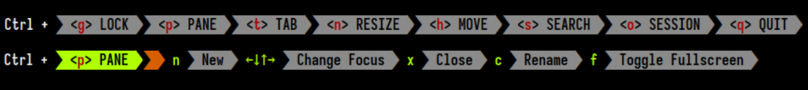
This preset should fit most users of Zellij. In it, all modes are accessible from the basic "normal" mode in which the user spends most of their time. One can enter Pane mode by pressing Ctrl p and then have access to all commands inside pane mode (eg. n to open a new pane or x to close the focused pane).
The Unlock-First (non-colliding) preset
 This preset is tailored to users who use terminal applications with keyboard shortcuts that collide with Zellij's own keybindings. In this preset, users "unlock" the interface before accessing the various input modes. The modes themselves can then be accessed with a single character shortcut.
This preset is tailored to users who use terminal applications with keyboard shortcuts that collide with Zellij's own keybindings. In this preset, users "unlock" the interface before accessing the various input modes. The modes themselves can then be accessed with a single character shortcut.
So for example, in order to open a new pane, the user would press: Ctrl g followed by p followed by n. The Zellij maintainers found that after a short adjustment period, this is a fast, efficient and most importantly mentally-consistent way of interacting with the application.
How to switch between presets?
 Switching between these presets is possible with the
Switching between these presets is possible with the Configuration screen. Accessible with:
Ctrl o+cin the default presetCtrl g+o+cin theUnlock-Firstpreset
The configuration screen overrides the current keybindings with those of the selected preset. Either temporarily just for the relevant session, or permanently by writing them to the configuration file.
Choosing between the two is also an option given to users on the first-run of Zellij if they do not already have a configuration file in place.
Changing Modifiers
Zellij uses two different modifiers to distinguish between two main sets of actions.
The Primary Modifier (default: Ctrl)
This modifier is used to access the different modes (eg. Pane and Tab). Its exact usage depends on one's preset.
The Secondary Modifier (default: Alt)
This modifier is used for common shortcuts (eg. Alt n to open a new pane or Alt f to toggle floating panes).
Rebinding Modifiers
 Other than manually configuring keybindings, modifiers can be changed without overriding the current configuration through the
Other than manually configuring keybindings, modifiers can be changed without overriding the current configuration through the Configuration screen, accessible with:
Ctrl o+cin the default presetCtrl g+o+cin theUnlock-Firstpreset
For the Unlock-First preset, one can change the Unlock Toggle entirely.
A note about multiple modifiers
While it's certainly possible to change these modifiers to Ctrl Alt, Super or even Ctrl Shift Alt - these all require the usage of a terminal emulator which itself supports multiple modifiers. Examples include: Alacritty, WezTerm and foot.
Configuration
Zellij uses KDL as its configuration language.
Quickstart:
mkdir ~/.config/zellij
zellij setup --dump-config > ~/.config/zellij/config.kdl
Note: In most cases, Zellij will create the above file automatically on first run. Be sure to check if it exists first.
Where does Zellij look for the config file?
By default Zellij will look for config.kdl in the config directory.
Zellij will search for the config directory as follows:
-
--config-dirflag -
ZELLIJ_CONFIG_DIRenv variable -
$HOME/.config/zellij -
default location
- Linux:
/home/alice/.config/zellij - Mac:
/Users/Alice/Library/Application Support/org.Zellij-Contributors.Zellij
- Linux:
-
system location (
/etc/zellij)
How to bypass the config file?
In order to pass a config file directly to zellij:
zellij --config [FILE]
or use the ZELLIJ_CONFIG_FILE environment variable.
To start without loading configuration from default directories:
zellij options --clean
How do I update the config file for running sessions?
Zellij actively watches for changes in the active configuration file. Most fields will be applied immediately without the need for a restart. Otherwise, this will be mentioned in the commentary of the relevant field.
Options
Configuration options can be set directly at the root of the configuration file
These include:
on_force_close
Choose what to do when zellij receives SIGTERM, SIGINT, SIGQUIT or SIGHUP eg. when terminal window with an active zellij session is closed
Options:
- detach (Default)
- quit
on_force_close "quit"
simplified_ui
Send a request for a simplified ui (without arrow fonts) to plugins
Options:
- true
- false (Default)
simplified_ui true
default_shell
Choose the path to the default shell that zellij will use for opening new panes
Default: $SHELL
default_shell "fish"
pane_frames
Toggle between having pane frames around the panes
Options:
- true (default)
- false
pane_frames true
theme
Choose the Zellij color theme. This theme must be specified in the themes section or loaded from the themes folder. See themes
Default: default
theme "default"
default_layout
The name of the layout to load on startup (must be in the layouts folder). See layouts
Default: "default"
default_layout "compact"
default_mode "locked"
Choose the mode that zellij uses when starting up.
Default: normal
default_mode "locked"
mouse_mode
Toggle enabling the mouse mode. On certain configurations, or terminals this could potentially interfere with copying text.
Options:
- true (default)
- false
mouse_mode false
scroll_buffer_size
Configure the scroll back buffer size This is the number of lines zellij stores for each pane in the scroll back buffer. Excess number of lines are discarded in a FIFO fashion.
Valid values: positive integers
Default value: 10000
scroll_buffer_size 10000
copy_command
Provide a command to execute when copying text. The text will be piped to the stdin of the program to perform the copy. This can be used with terminal emulators which do not support the OSC 52 ANSI control sequence that will be used by default if this option is not set.
Examples:
copy_command "xclip -selection clipboard" // x11
copy_command "wl-copy" // wayland
copy_command "pbcopy" // osx
copy_clipboard
Choose the destination for copied text Allows using the primary selection buffer (on x11/wayland) instead of the system clipboard. Does not apply when using copy_command.
Options:
- system (default)
- primary
copy_clipboard "primary"
copy_on_select
Enable or disable automatic copy (and clear) of selection when releasing mouse
Default: true
copy_on_select false
scrollback_editor
Path to the default editor to use to edit pane scrollbuffer as well as the CLI and layout edit commands
Default: $EDITOR or $VISUAL
scrollback_editor "/usr/bin/vim"
mirror_session
When attaching to an existing session with other users, should the session be mirrored (true) or should each user have their own cursor (false) Default: false
mirror_session true
layout_dir
The folder in which Zellij will look for layouts
layout_dir "/path/to/my/layout_dir"
theme_dir
The folder in which Zellij will look for themes
theme_dir "/path/to/my/theme_dir"
env
A key -> value map of environment variables that will be set for each terminal pane Zellij starts.
env {
RUST_BACKTRACE 1
FOO "bar"
}
rounded_corners
Set whether the pane frames (if visible) should have rounded corners.
This config variable is set differently than others:
ui {
pane_frames {
rounded_corners true
}
}
hide_session_name
Hides the session name (randomly generated or otherwise) from the UI
ui {
pane_frames {
hide_session_name true
}
}
auto_layout
Toggle between having Zellij lay out panes according to a predefined set of layouts whenever possible Options:
- true (default)
- false
auto_layout true
styled_underlines
Toggle between supporting the extended "styled_underlines" ANSI protocol and ignoring it (can sometimes cause some issues in unsupported terminals). Options:
- true (default)
- false
styled_underlines true
session_serialization
If enabled, sessions will be serialized to the cache folder (and thus become resurrectable between reboots or on exit). Read more about session resurrection. Options:
- true (default)
- false
session_serialization true
pane_viewport_serialization
If enabled along with session_serialization, the pane viewport (the visible part of the terminal excluding the scrollback) will be serialized and resurrectable as well. Read more about session resurrection.
Options:
- true
- false (default)
pane_viewport_serialization true
scrollback_lines_to_serialize
When pane_viewport_serialization is enabled, setting scrollback_lines_to_serialize to 0 in the will serialize all scrollback and to any other number will serialize line number up to that scrollback. Read more about session resurrection.
Note: this might incur higher resource utilization (and certainly a higher cache folder usage...)
Options:
0: serialize all scrollbackint: serialize this much lines for each pane (max is the scrollback limit)
pane_viewport_serialization 100
disable_session_metadata
Enable or disable writing of session metadata to disk
Note: If disabled, other sessions might not know metadata info on this session, so features such as the session-manager and session listing might not work properly.
Options:
- true
- false (default)
disable_session_metadata true
Configuring Keybindings
Zellij comes with a default set of keybindings that try to fit as many different users and use cases while trying to maximize comfort for everyone.
It is possible to add to these defaults or even override them with an external configuration. For more information about the configuration file itself, see Configuration.
Keybindings can be configured in the keybinds block of the file.
See the default keybindings as reference for the default keybindings.
keybinds {
// keybinds are divided into modes
normal {
// bind instructions can include one or more keys (both keys will be bound separately)
// bind keys can include one or more actions (all actions will be performed with no sequential guarantees)
bind "Ctrl g" { SwitchToMode "locked"; }
bind "Ctrl p" { SwitchToMode "pane"; }
bind "Alt n" { NewPane; }
bind "Alt h" "Alt Left" { MoveFocusOrTab "Left"; }
}
pane {
bind "h" "Left" { MoveFocus "Left"; }
bind "l" "Right" { MoveFocus "Right"; }
bind "j" "Down" { MoveFocus "Down"; }
bind "k" "Up" { MoveFocus "Up"; }
bind "p" { SwitchFocus; }
}
locked {
bind "Ctrl g" { SwitchToMode "normal"; }
}
}
Modes
The keybindings are divided into several modes. Each mode has its separate keybindings.
eg.
keybinds {
normal {
// keybindings available in normal mode
}
pane {
// keybindings available in pane mode
}
}
The available modes are:
- normal
- locked
- resize
- pane
- move
- tab
- scroll
- search
- entersearch
- renametab
- renamepane
- session
- tmux
Binding keys
Keys are bound with bind instructions inside each mode. A bind instruction consists of a list of keys to be bound, as well as a list of actions to be bound to each of those keys.
Note: All actions will be performed with no sequential guarantees.
eg.
// bind the Alt-n to open a new pane
bind "Alt n" { NewPane; }
// bind both the "h" key and the left-arrow key to move pane focus left
bind "h" "Left" { MoveFocus "Left"; }
// bind the "f" key to toggle the focused pane full-screen and switch to normal mode
bind "f" { ToggleFocusFullscreen; SwitchToMode "Normal"; }
Overriding keys
When configured, keybindings override the default keybinds of the application individually (if a certain key was bound in the configuration, it overrides that key in the default configuration).
It's possible to explicitly unbind a key:
keybinds {
unbind "Ctrl g" // unbind in all modes
normal {
unbind "Alt h" "Alt n" // unbind one or more keys in a specific mode
}
}
It's also possible to use the special clear-defaults=true attribute either globally or in a specific mode:
keybinds clear-defaults=true { // will clear all default keybinds
normal {
// ...
}
}
keybinds {
normal clear-defaults=true { // will clear all keybinds in normal mode
// ...
}
}
Keys
Keys are defined in a single quoted string, with space delimiting modifier keys.
bind "a" // bind the individual character a
bind "Ctrl a" // bind a with the ctrl modifier
bind "Alt a" // bind a with the alt modifier
bind "Ctrl Alt a" // bind a with the multiple "ctrl alt" modifier
bind "F8" // bind the F8 key
bind "Left" // bind the left arrow key
-
Possible keys
- digits or lowercase characters (eg.
a) - function keys 1-12 (eg.
F1) BackspaceLeft(left-arrow key)Right(right-arrow key)Up(up-arrow key)Down(down-arrow key)BackspaceHomeEndPageUpPageDownTabDeleteInsertSpaceEnterEsc
- digits or lowercase characters (eg.
-
Possible modifiers
CtrlAltShiftSuper
A note about multiple and special modifiers
Some modifiers (eg. Super), multiple modifiers (eg. Ctrl Alt) as well as certain key combinations require support from the terminal emulator as well. Example of supporting terminals are: Alacritty, WezTerm and foot.
Possible Actions
Clear
Clear the scrollback buffer of the focused pane
Possible arguments: None
eg.
bind "a" { Clear; }
CloseFocus
Close the focused pane
Possible arguments: None
eg.
bind "a" { CloseFocus; }
CloseTab
Close the focused tab
Possible arguments: None
eg.
bind "a" { CloseTab; }
Detach
Detach from the current session, leaving it running in the background
Possible arguments: None
eg.
bind "a" { Detach; }
DumpScreen
Dump the contents of the focused pane, including its entire scrollback, to the specified file.
Required arguments: A path to a file on the hard-drive
eg.
bind "a" { DumpScreen "/tmp/my-dump.txt"; }
EditScrollback
Edit the scrollback of the currently focused pane with the user's default editor.
Possible arguments: None
bind "a" { EditScrollback; }
FocusNextPane
Change focus to the next pane (order not guaranteed)
Possible arguments: None
bind "a" { FocusNextPane; }
FocusPreviousPane
Change focus to the previous pane (order not guaranteed)
Possible arguments: None
bind "a" { FocusPreviousPane; }
GoToNextTab
Change focus to the next tab
Possible arguments: None
bind "a" { GoToNextTab; }
GoToPreviousTab
Change focus to the previous tab
Possible arguments: None
bind "a" { GoToPreviousTab; }
GoToTab
Change focus to a tab with a specific index
Required arguments: numeric tab index (eg. 1)
bind "a" { GoToTab 1; }
HalfPageScrollDown
Scroll the focused pane half a page down
Possible arguments: None
bind "a" { HalfPageScrollDown; }
HalfPageScrollUp
Scroll the focused pane half a page up
Possible arguments: None
bind "a" { HalfPageScrollUp; }
LaunchOrFocusPlugin
Launch a plugin if it is not already loaded somewhere in the session, focus it if it is
Required arguments: The plugin URL (eg. file:/path/to/my/plugin.wasm)
Optional arguments: floating - true or false (default is false)
bind "a" {
LaunchOrFocusPlugin "zellij:strider" {
floating true
}
}
MessagePlugin
Send a message to one or more plugins, using a pipe - meaning the plugin will be launched if it is not already running.
Required arguments: None (with no options specified, this keybind will send an empty message to all plugins)
Optional arguments::
- launch_new (true/false): force a new plugin to launch even if one is already running
- skip_cache (true/false): force re-compilation (and re-download if the plugin is http), even if the plugin is already running or cached
- floating (true/false): if launching a new plugin, should it be floating or tiled
- name (String): The name of the message
- payload (String): The payload of the message
- title (String): The pane title of the pane if launching a new plugin instance
- cwd (String): The working directory of the plugin if launching a new instance
bind "a" {
MessagePlugin "file:/path/to/my/plugin.wasm" {
name "message_name"
payload "message_payload"
cwd "/path/to/my/working/directory"
}
}
MoveFocus
Move focus in a specific direction
Required arguments: Left | Right | Up | Down
bind "a" { MoveFocus "Left"; }
MoveFocusOrTab
Move focus left or right, or to the next or previous tab if on screen edge
Required arguments: Left | Right
bind "a" { MoveFocusOrTab "Left"; }
MovePane
Move the position of the focused pane in the specific direction
Required arguments: Left | Right | Up | Down
bind "a" { MovePane "Left"; }
MoveTab
Change the position of the active tab either left or right.
Required arguments: the direction, either "Left" or "Right"
bind "a" { MoveTab "Left"; }
NextSwapLayout
Change the layout of the current tab (either tiled or floating) to the next one
Possible arguments: None
bind "a" { NextSwapLayout; }
NewPane
Open a new pane (in the specified direction)
Possible arguments: Down | Right
Behaviour without arguments: Opens a pane in the largest available space or if floating panes are visible, in the next floating pane position.
bind "a" { NewPane "Right"; }
NewTab
Open a new tab
Possible arguments: cwd
Current working directory for the new tab, name - the name of the new tab, layout - path to the layout file to load for this tab
bind "a" { NewTab; }
or:
bind "a" {
NewTab {
cwd "/tmp"
name "My tab name"
layout "/path/to/my/layout.kdl"
}
}
PageScrollDown
Scroll the focused pane one page down
Possible arguments: None
bind "a" { PageScrollDown; }
PageScrollUp
Scroll the focused pane one page up
Possible arguments: None
bind "a" { PageScrollUp; }
PreviousSwapLayout
Change the layout of the current tab (either tiled or floating) to the previous one
Possible arguments: None
bind "a" { PreviousSwapLayout; }
Quit
Quit Zellij :(
Possible arguments: None
bind "a" { Quit; }
Resize
Resize the focused pane either in the specified direction or increase/decrease its size automatically
Required arguments: Left | Right | Up | Down | Increase | Decrease
bind "a" { Resize "Increase"; }
Run
Run the specified command
Required arguments: The command to run, followed by optional arguments
Possible arguments: cwd - current working directory, direction - the direction to open the new command pane
// will run "tail -f /tmp/foo" in a pane opened below the focused one
bind "a" {
Run "tail" "-f" "foo" {
cwd "/tmp"
direction "Down"
}
}
ScrollDown
Scroll the focused pane down 1 line
Possible arguments: None
bind "a" { ScrollDown; }
ScrollToBottom
Scroll the focused pane completely down
Possible arguments: None
bind "a" { ScrollToBottom; }
ScrollUp
Scroll the focused pane up 1 line
Possible arguments: None
bind "a" { ScrollUp; }
ScrollToTop
Scroll the focused pane completely up
Possible arguments: None
bind "a" { ScrollToTop; }
Search
When searching, move to the next or previous search occurrence
Required arguments: "down" | "up"
bind "a" { Search "up"; }
SearchToggleOption
Toggle various search options on/off
Required arguments: "CaseSensitivity" | "Wrap" | "WhileWord"
bind "a" { SearchToggleOption "CaseSensitivity"; }
SwitchToMode
Switch the current input mode
Required arguments: See Modes
bind "a" { SwitchToMode "locked"; }
ToggleActiveSyncTab
Toggle the syncing of input between all panes in the focused tab
Possible arguments: None
bind "a" { ToggleActiveSyncTab; }
ToggleFloatingPanes
Show/hide floating panes; if none are open, one will be opened
Possible arguments: None
bind "a" { ToggleFloatingPanes; }
ToggleFocusFullscreen
Toggle the focused pane as fullscreen on/off
Possible arguments: None
bind "a" { ToggleFocusFullscreen; }
ToggleMouseMode
Toggle mouse support on/off
Possible arguments: None
bind "a" { ToggleMouseMode; }
TogglePaneEmbedOrFloating
Float focused embedded pane or embed focused floating pane
Possible arguments: None
bind "a" { TogglePaneEmbedOrFloating; }
TogglePaneFrames
Show/hide the frames around panes (notice, these might have valuable UX info)
Possible arguments: None
bind "a" { TogglePaneFrames; }
ToggleTab
Change the tab focus
Possible arguments: None
bind "a" { ToggleTab; }
UndoRenamePane
Undo a rename pane operation currently in progress (reverting to the previous name)
Possible arguments: None
bind "a" { UndoRenamePane; }
UndoRenameTab
Undo a rename tab operation currently in progress (reverting to the previous name)
Possible arguments: None
bind "a" { UndoRenameTab; }
Write
Write bytes to the active pane
Required arguments: the bytes to write as integers
bind "a" { Write 102 111 111; }
WriteChars
Write a string of characters to the active pane
Required arguments: the string of characters to write
bind "a" { WriteChars "hi there!"; }
Shared bindings
There are three special node types that can be used when defining keybindings:
keybinds {
shared {
// these keybindings will be present in all modes
bind "Ctrl g" { SwitchToMode "locked"; }
}
shared_except "resize" "locked" {
// these keybindings will be present in all modes except "resize" and "locked"
bind "Ctrl g" { SwitchToMode "locked"; }
}
shared_among "resize" "locked" {
// these keybindings will be present in the "resize" and "locked" modes
bind "Ctrl g" { SwitchToMode "locked"; }
}
}
Themes
Themes can be specified either in the configuration file under the themes section, or directly in a separate file.
Truecolor themes
themes {
dracula {
fg 248 248 242
bg 40 42 54
black 0 0 0
red 255 85 85
green 80 250 123
yellow 241 250 140
blue 98 114 164
magenta 255 121 198
cyan 139 233 253
white 255 255 255
orange 255 184 108
}
}
256 color themes
themes {
default {
fg 1
bg 10
black 20
red 30
green 40
yellow 50
blue 60
magenta 70
cyan 80
white 90
orange 254
}
}
Hexadecimal color themes
themes {
nord {
fg "#D8DEE9"
bg "#2E3440"
black "#3B4252"
red "#BF616A"
green "#A3BE8C"
yellow "#EBCB8B"
blue "#81A1C1"
magenta "#B48EAD"
cyan "#88C0D0"
white "#E5E9F0"
orange "#D08770"
}
}
Getting Zellij to pick up the theme
If the theme is called default, then zellij will pick it on startup.
To specify a different theme, run zellij with:
zellij options --theme [NAME]
or put the name in the configuration file with theme: [NAME] as follows:
keybinds {
// ...
}
// ...
// Choose the theme that is specified in the themes section.
theme "default"
themes {
default {
fg "#000000"
// ...
}
}
or If you don't want to modify the configuration file, just add a theme, you can use the themes directory.
themes is located in CONFIG_DIR/themes by default. You can check it through zellij setup --check.
If you place the theme file in this folder, zelij will automatically merge the themes.
And you can set the theme through the options (options --theme) as in the first method.
Here are some example themes.
List of Themes
These themes are provided built-in with Zellij. One can switch to them by changing the theme configuration option
Dark Themes
- ansi
- ao
- atelier-sulphurpool
- ayu_mirage
- ayu_dark
- catppuccin-frappe
- catppuccin-macchiato
- cyber-noir
- blade-runner
- retro-wave
- dracula
- everforest-dark
- gruvbox-dark
- iceberg-dark
- kanagawa
- lucario
- menace
- molokai-dark
- night-owl
- nightfox
- nord
- one-half-dark
- onedark
- solarized-dark
- tokyo-night-dark
- tokyo-night-storm
- tokyo-night
- vesper
Light Themes
- ayu_light
- catppuccin-latte
- everforest-light
- gruvbox-light
- iceberg-light
- dayfox
- pencil-light
- solarized-light
- tokyo-night-light
Theme Gallery
This page showcases the example themes that are included inside of the main zellij repository.
Dracula

More Dracula


Gruvbox Dark

More Gruvbox Dark


Gruvbox Light

More Gruvbox Light


Molokai Dark

More Molokai Dark


Nord

More Nord


One Half Dark

More One Half Dark


Solarized Dark

More Solarized Dark


Tokyo Night

More Tokyo Night


Tokyo Night Light

More Tokyo Night Light


Tokyo Night Storm

More Tokyo Night Storm


Catppuccin Latte

More Catppuccin Latte
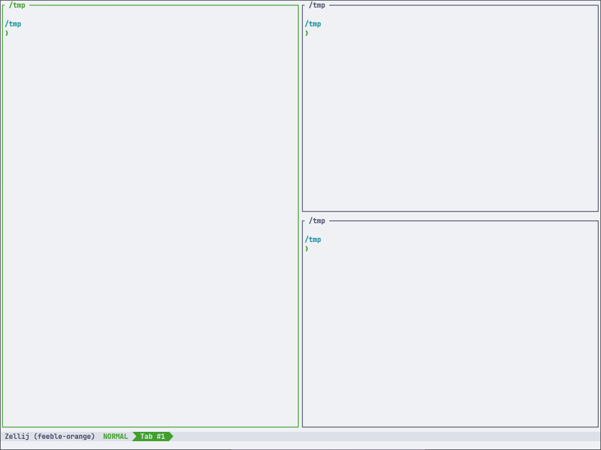 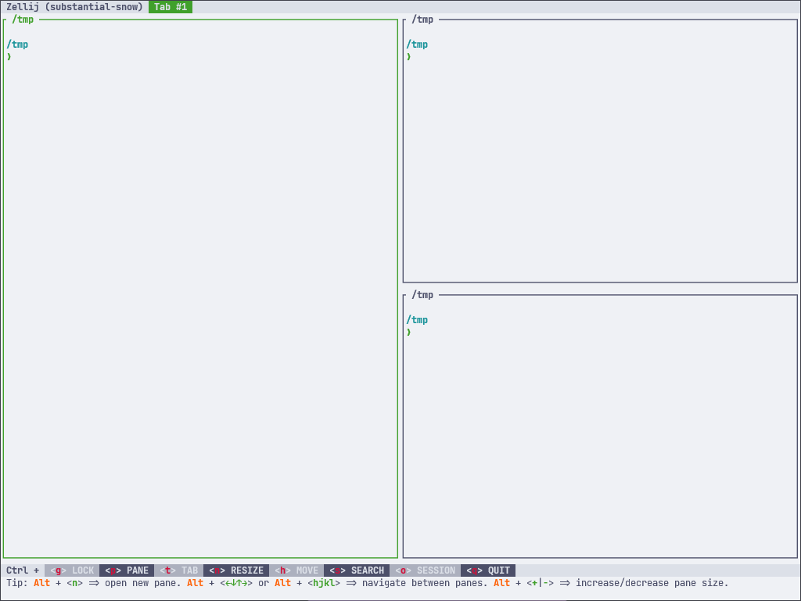 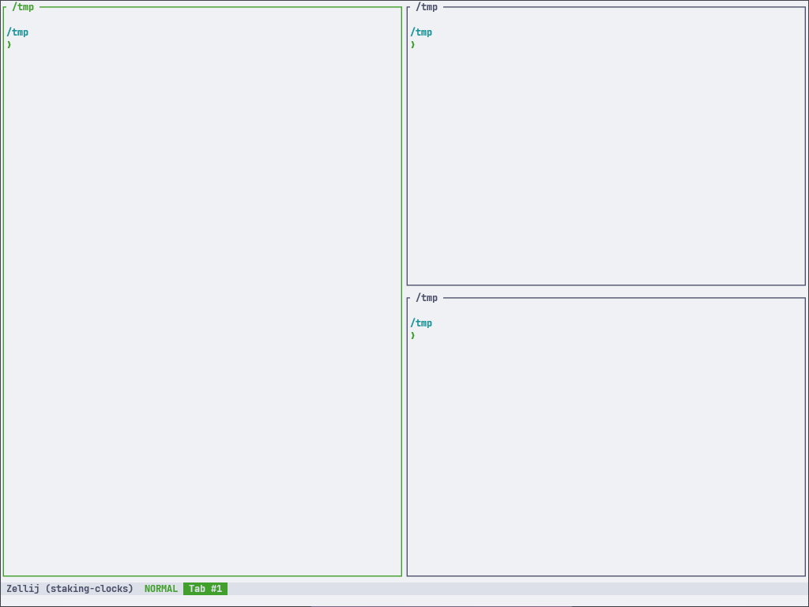
Catppuccin Frappe

More Catppuccin Frappe


Catppuccin Macchiato
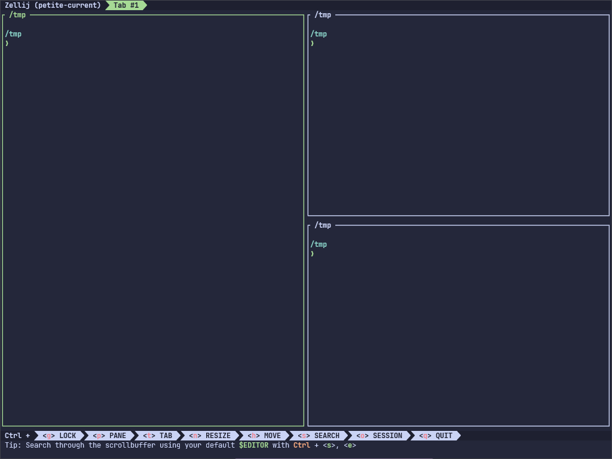
More Catppuccin Macchiato


Catppuccin Mocha

More Catppuccin Mocha
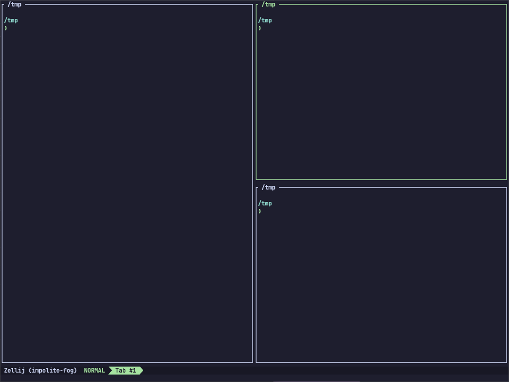 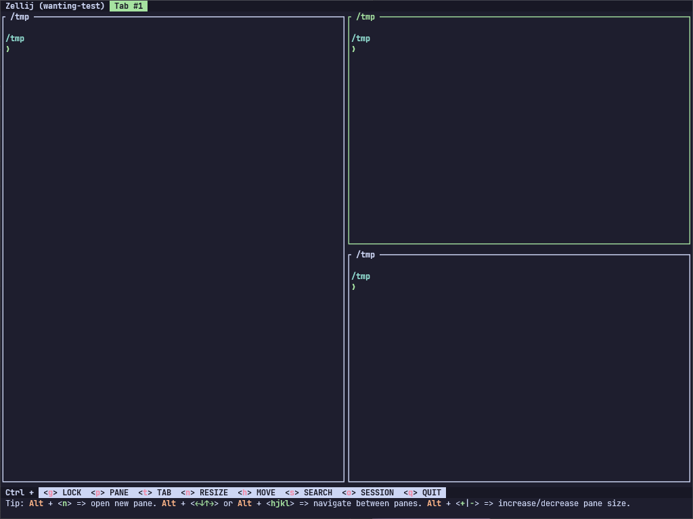 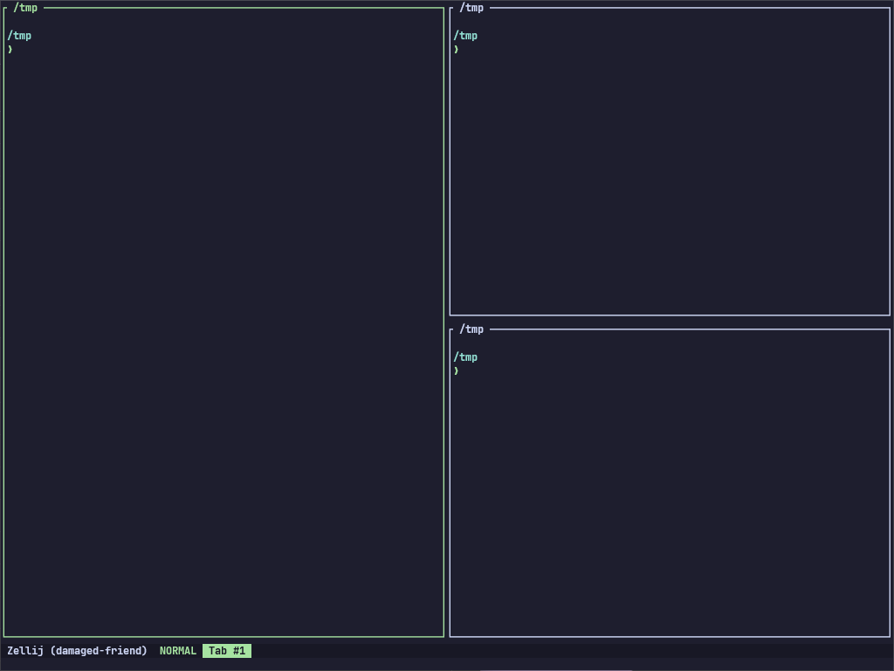
Command Line Configuration Options
In addition to the configuration file, zellij can also be configured through the command line when running it. These options will override options in the configuration file.
USAGE:
zellij options [OPTIONS]
OPTIONS:
--attach-to-session <ATTACH_TO_SESSION>
Whether to attach to a session specified in "session-name" if it exists [possible
values: true, false]
--copy-clipboard <COPY_CLIPBOARD>
OSC52 destination clipboard [possible values: system, primary]
--copy-command <COPY_COMMAND>
Switch to using a user supplied command for clipboard instead of OSC52
--copy-on-select <COPY_ON_SELECT>
Automatically copy when selecting text (true or false) [possible values: true, false]
--default-layout <DEFAULT_LAYOUT>
Set the default layout
--default-mode <DEFAULT_MODE>
Set the default mode
--default-shell <DEFAULT_SHELL>
Set the default shell
--disable-mouse-mode
Disable handling of mouse events
Print help information
--layout-dir <LAYOUT_DIR>
Set the layout_dir, defaults to subdirectory of config dir
--mirror-session <MIRROR_SESSION>
Mirror session when multiple users are connected (true or false) [possible values: true,
false]
--mouse-mode <MOUSE_MODE>
Set the handling of mouse events (true or false) Can be temporarily bypassed by the
[SHIFT] key [possible values: true, false]
--no-pane-frames
Disable display of pane frames
--on-force-close <ON_FORCE_CLOSE>
Set behaviour on force close (quit or detach)
--pane-frames <PANE_FRAMES>
Set display of the pane frames (true or false) [possible values: true, false]
--scroll-buffer-size <SCROLL_BUFFER_SIZE>
--scrollback-editor <SCROLLBACK_EDITOR>
Explicit full path to open the scrollback editor (default is $EDITOR or $VISUAL)
--session-name <SESSION_NAME>
The name of the session to create when starting Zellij
--simplified-ui <SIMPLIFIED_UI>
Allow plugins to use a more simplified layout that is compatible with more fonts (true
or false) [possible values: true, false]
--theme <THEME>
Set the default theme
--theme-dir <THEME_DIR>
Set the theme_dir, defaults to subdirectory of config dir
Migrating from old YAML layouts / configs
Starting from Zellij 0.32.0, Zellij uses KDL layouts as described in these documents.
Up until this version, Zellij used YAML configuration files as described in the old documents kept here for posterity.
As a matter of convenience, when Zellij is run with an old configuration / layout / theme file (either explicitly with a cli flag or if it found the file in the default locations) it will prompt the user and convert that file to the new format.
This can also be done manually:
$ zellij convert-config /path/to/my/config.yaml > /path/to/my/config.kdl
$ zellij convert-layout /path/to/my/layout.yaml > /path/to/my/layout.kdl
$ zellij convert-theme /path/to/my/theme.yaml > /path/to/my/theme.kdl
Controlling Zellij through the CLI
Zellij can be controlled through the CLI. Meaning that while inside a zellij session, one can issue commands from the terminal to interact with the currently running session.
eg.
$ zellij action new-pane
Commands can also be issued to a different Zellij session:
$ zellij --session pretentious-cat action new-pane
For a full list of actions, see CLI Actions.
For starting commands in a new pane, see Zellij Run.
For editing a file in a new pane with your own editor, see Zellij Edit.
For loading and controlling plugins, see Zellij Plugin and Zellij Pipe.
Completions
For convenience, zellij provides cli completions for popular shells.
You can dump these completions to STDOUT and then append them to your shell's configuration file with:
$ zellij setup --generate-completion fish
$ zellij setup --generate-completion bash
$ zellij setup --generate-completion zsh
These completions also include aliases for running a command in a new pane and editing a file in a new pane:
$ zr tail -f /path/to/my/file # open a new pane tailing this file
$ zrf htop # open a new floating pane with htop
$ ze ./main.rs # open a new pane with your editor (eg. vim) pointed at ./main.rs
See your shell's documentation for information on where to append these.
Zellij Run
Zellij includes a top-level run command that can be used to launch a new Zellij pane running a specific command:
eg.
$ zellij run -- git diff
OPTIONS:
-c, --close-on-exit Close the pane immediately when its command exits
--cwd <CWD> Change the working directory of the new pane
-d, --direction <DIRECTION> Direction to open the new pane in
-f, --floating Open the new pane in floating mode
-h, --help Print help information
--height <HEIGHT> The height if the pane is floating as a bare integer (eg. 1) or
-i, --in-place Open the new pane in place of the current pane, temporarily suspending it
-n, --name <NAME> Name of the new pane
-s, --start-suspended Start the command suspended, only running after you first presses
ENTER
--width <WIDTH> The width if the pane is floating as a bare integer (eg. 1) or
percent (eg. 10%)
-x, --x <X> The x coordinates if the pane is floating as a bare integer (eg.
1) or percent (eg. 10%)
-y, --y <Y> The y coordinates if the pane is floating as a bare integer (eg.
1) or percent (eg. 10%)
Note: to shorten this command to a more friendly length, see Completions under: CLI
This new pane will not immediately close when the command exits. Instead, it will show its exit status on the pane frame and allow users to press <ENTER> to re-run the command inside the same pane, or <Ctrl-c> to close the pane.
We feel this is a new and powerful way to interact with the command line.

Zellij Edit
It's possible to open your default editor pointed at a file in a new Zellij pane.
This can be useful to save time instead of opening a new pane and starting your default editor inside it manually.
eg.
$ zellij edit ./main.rs # open main.rs in a new pane
$ zellij edit --floating ./main.rs # open main.rs in a new floating pane
$ zellij edit ./main.rs --line-number 10 # open main.rs pointed at line number 10
Possible Options:
--cwd <CWD> Change the working directory of the editor
-d, --direction <DIRECTION> Direction to open the new pane in
-f, --floating Open the new pane in floating mode
-h, --help Print help information
--height <HEIGHT> The height if the pane is floating as a bare integer (eg. 1)
or percent (eg. 10%)
-i, --in-place Open the new pane in place of the current pane, temporarily
suspending it
-l, --line-number <LINE_NUMBER> Open the file in the specified line number
--width <WIDTH> The width if the pane is floating as a bare integer (eg. 1)
or percent (eg. 10%)
-x, --x <X> The x coordinates if the pane is floating as a bare integer
(eg. 1) or percent (eg. 10%)
-y, --y <Y> The y coordinates if the pane is floating as a bare integer
(eg. 1) or percent (eg. 10%)
Note: The default editor is anything set in $EDITOR or $VISUAL - alternatively, it can be set explicitly with the scrollback_editor configuration option.
Another Note: To shorten this command, see Cli Completions
CLI Actions
close-pane
Close the focused pane
eg.
$ zellij action close-pane
close-tab
Close the current tab
eg.
$ zellij action close-tab
dump-screen
Dumps the pane scrollback to a file
ARGS: The path to the file on the hard-drive (eg. /tmp/screen-dump.txt)
eg.
$ zellij action dump-screen /tmp/screen-dump.txt
edit
Open the specified file in a new zellij pane with your default EDITOR
ARGS: The path to the file to open (eg. /tmp/my-file.rs)
OPTIONS:
-d, --direction <DIRECTION> [right|down]
-f, --floating
-l, --line-number <LINE_NUMBER>
eg.
$ zellij action edit ./my-file.rs -f
Note: it is also possible to issue this action without the action prefix:
eg.
$ zellij edit ./my-file.rs -f
dump-layout
Dumps the current Layout of the session to STDOUT
eg.
$ zellij action dump-layout
edit-scrollback
Open the pane scrollback in your default editor
eg.
$ zellij action edit-scrollback
focus-next-pane
Change focus to the next pane
eg.
$ zellij action focus-next-pane
focus-previous-pane
Change focus to the previous pane
eg.
$ zellij action focus-previous-pane
go-to-next-tab
Go to the next tab
eg.
$ zellij action go-to-next-tab
go-to-previous-tab
Go to the previous tab
eg.
$ zellij action go-to-previous-tab
go-to-tab
Go to tab with index [index]
ARGS: The tab index (eg. 1)
eg.
$ zellij action go-to-tab 1
go-to-tab-name
Go to tab with name [name]
ARGS: The tab name (eg. "Tab #1")
OPTIONS:
-c, --create Create a tab if one does not exist
eg.
$ zellij action go-to-tab-name "Tab #1"
half-page-scroll-down
Scroll down half page in focus pane
eg.
$ zellij action half-page-scroll-down
half-page-scroll-up
Scroll up half page in focus pane
eg.
$ zellij action half-page-scroll-up
launch-or-focus-plugin
Launch a plugin if it is not loaded somewhere in the session, focus it if it is.
ARGS: The plugin URL (eg. file:/path/to/my/plugin.wasm)
OPTIONS:
-f, --floating Will be used when launching the plugin if it is not already running
eg.
zellij action launch-or-focus-plugin zellij:strider --floating
list-clients
List all clients connected to the current session, their focused pane id and their running program (if it's not the default shell and if Zellij can detect it).
A note about pane ids: Since terminal panes and plugin panes can have overlapping IDs, they are differentiated by prefixing the pane type, eg. terminal_1 is a different pane than plugin_1. The ID of terminal panes is the same one that can be discovered through the ZELLIJ_PANE_ID environment variable.
eg.
$ zellij action list-clients
CLIENT_ID ZELLIJ_PANE_ID RUNNING_COMMAND
1 plugin_2 zellij:session-manager
2 terminal_3 vim /tmp/my-file.txt
move-focus
Move the focused pane in the specified direction.
ARGS: The direction to move [right|left|up|down]
eg.
$ zellij action move-focus left
move-focus-or-tab
Move focus to the pane or tab (if on screen edge) in the specified direction
ARGS: The direction to move [right|left|up|down]
eg.
$ zellij action move-focus-or-tab left
move-pane
Change the location of the focused pane in the specified direction
ARGS: The direction to move [right|left|up|down]
eg.
$ zellij action move-pane left
new-pane
Open a new pane in the specified direction or as a floating pane. If no is specified, will try to use the biggest available space.
ARGS (optional): the command to run inside the pane in place of the default shell (must be preceeded by a double-dash --)
OPTIONS:
-c, --close-on-exit Close the pane immediately when its command exits
--cwd <CWD> Change the working directory of the new pane
-d, --direction <DIRECTION> Direction to open the new pane in
-f, --floating Open the new pane in floating mode
-h, --help Print help information
-n, --name <NAME> Name of the new pane
-s, --start-suspended Start the command suspended, only running after you first presses
eg.
$ zellij action new-pane -f # open a new floating pane with the default shell
$ zellij action new-pane --name "follow this log!" -- tail -f /tmp/my-log-file # open a new floating pane with the default shell
Note: This can also be shortened to zellij run
eg.
$ zellij run -- tail -f /tmp/my-log-file
new-tab
Create a new tab, optionally with a specified tab layout and name
Specifying a path to a layout file with --layout will start that tab with the specified layout.
If the --cwd flag if included with the --layout flag, all relative paths in that layout will start from this cwd. Replacing the global cwd in the layout if it exists.
See layout CWD composition for more info.
OPTIONS:
-c, --cwd <CWD>
-l, --layout <LAYOUT>
-n, --name <NAME>
page-scroll-down
Scroll down one page in focus pane
eg.
$ zellij action page-scroll-down
page-scroll-up
Scroll up one page in focus pane
eg.
$ zellij action page-scroll-up
rename-pane
Renames the focused pane (title will appear on the pane frame)
ARGS: the pane name
eg.
$ zellij action rename-pane "alice the cat"
rename-tab
Renames the focused tab
ARGS: the tab name
eg.
$ zellij action rename-tab "alice the cat"
resize
Resize the focused pane in the specified direction.
ARGS: The resize direction [right|left|up|down|+|-]
eg.
$ zellij action resize left
scroll-down
Scroll down 1 line in the focused pane
eg.
$ zellij action scroll-down
scroll-to-bottom
Scroll down to bottom in the focused pane
eg.
$ zellij action scroll-to-bottom
scroll-up
Scroll up 1 line in the focused pane
eg.
$ zellij action scroll-up
start-or-reload-plugin
Launch a plugin if it is not loaded or reload it (skipping cache) if it is. Mostly useful for plugin development.
ARGS: The plugin URL (eg. file:/path/to/my/plugin.wasm)
eg.
zellij action start-or-reload-plugin zellij:strider
switch-mode
Switch input mode of all connected clients
ARGS: The mode to switch to [locked|pane|tab|resize|move|search|session|tmux]
eg.
$ zellij action switch-mode locked
toggle-active-sync-tab
Toggle between sending text input to all panes in the current tab and just to the focused pane (the default)
eg.
$ zellij action toggle-active-sync-tab
toggle-floating-panes
Toggle the visibility of all floating panes in the current Tab, open one if none exist
eg.
$ zellij action toggle-floating-panes
toggle-fullscreen
Toggle between fullscreen focus pane and normal layout
eg.
$ zellij action toggle-fullscreen
toggle-pane-embed-or-floating
Embed focused pane if floating or float focused pane if embedded
eg.
$ zellij action toggle-pane-embed-or-floating
toggle-pane-frames
Toggle frames around panes in the UI
Note: Zellij relies on frames to display parts of the UI, removing them might make certain things a little confusing to those not used to the app.
eg.
$ zellij action toggle-pane-frames
undo-rename-pane
Remove a previously set pane name
eg.
$ zellij action undo-rename-pane
undo-rename-tab
Remove a previously set tab name
eg.
$ zellij action undo-rename-tab
query-tab-names
Query all tab names (receive a textual list on the command line)
eg.
$ zellij action query-tab-names
write
Write bytes to the focused pane
ARGS: An array of bytes to write
eg.
$ zellij action write 102 111 111
write-chars
Write characters to the focused pane
ARGS: A string of characters to write
eg.
$ zellij action write-chars "Hi there!"
Zellij Plugin
Zellij includes a top-level plugin cli command that can be used to launch a new Zellij plugin instance from a local or remote wasm file
eg.
$ zellij plugin -- https://path/to/my/plugin.wasm
USAGE:
zellij plugin [OPTIONS] [--] <URL>
ARGS:
<URL> Plugin URL, can either start with http(s), file: or zellij:
OPTIONS:
-c, --configuration <CONFIGURATION>
Plugin configuration
-f, --floating
Open the new pane in floating mode
-h, --help
Print help information
--height <HEIGHT>
The height if the pane is floating as a bare integer (eg. 1) or percent (eg. 10%)
-i, --in-place
Open the new pane in place of the current pane, temporarily suspending it
-s, --skip-plugin-cache
Skip the memory and HD cache and force recompile of the plugin (good for development)
--width <WIDTH>
The width if the pane is floating as a bare integer (eg. 1) or percent (eg. 10%)
-x, --x <X>
The x coordinates if the pane is floating as a bare integer (eg. 1) or percent (eg. 10%)
-y, --y <Y>
The y coordinates if the pane is floating as a bare integer (eg. 1) or percent (eg. 10%)
Zellij Pipe
Zellij pipes provide a way to send messages to one or more plugins, launching them on first-message if they are not running.
eg.
$ zellij plugin -- https://path/to/my/plugin.wasm
USAGE:
zellij pipe [OPTIONS] [--] <PAYLOAD>
* Send data to a specific plugin:
zellij pipe --plugin file:/path/to/my/plugin.wasm --name my_pipe_name -- my_arbitrary_data
* To all running plugins (that are listening):
zellij pipe --name my_pipe_name -- my_arbitrary_data
* Pipe data into this command's STDIN and get output from the plugin on this command's STDOUT
tail -f /tmp/my-live-logfile | zellij pipe --name logs --plugin https://example.com/my-plugin.wasm | wc -l
zellij plugin [OPTIONS] [--] <URL>
ARGS:
<PAYLOAD> The data to send down this pipe (if blank, will listen to STDIN)
OPTIONS:
-n, --name <NAME>
The name of the pipe
-a, --args <ARGS>
The args of the pipe
-p, --plugin <PLUGIN>
The plugin url (eg. file:/tmp/my-plugin.wasm) to direct this pipe to, if not specified,
will be sent to all plugins, if specified and is not running, the plugin will be
launched
-c, --plugin-configuration <PLUGIN_CONFIGURATION>
The plugin configuration (note: the same plugin with different configuration is
considered a different plugin for the purposes of determining the pipe destination)
-h, --help
Print help information
Layouts
Layouts are text files that define an arrangement of Zellij panes and tabs.
You can read more about creating a layout
Looking for the YAML configuration docs for versions <0.32.0? Look no further!
Example
A basic layout can look like this:
// layout_file.kdl
layout {
pane
pane split_direction="vertical" {
pane
pane command="htop"
}
}
Which would create the following layout:

Applying a Layout
A layout can be applied when Zellij starts:
$ zellij --layout /path/to/layout_file.kdl
Or by setting it up in the configuration.
A layout can also be applied inside a running session with the same command:
$ zellij --layout /path/to/layout_file.kdl
In this case, Zellij will start this layout as one or more new tabs in the current session.
A layout can also be applied from a remote URL:
$ zellij --layout https://example.com/layout_file.kdl
For security reasons, remote layouts will have all their commands suspended behind a Waiting ro run <command> banner - prompting the user to run each one.
Layout default directory
By default Zellij will load the default.kdl layout, found in the layouts directory (a subdirectory of the config directory [config/layouts]).
If not found, Zellij will start with one pane and one tab.
Layouts residing in the default directory can be accessed by their bare name:
zellij --layout [layout_name]
Layout Configuration Language
Zellij uses KDL as its configuration language.
Creating a Layout
Quickstart:
$ zellij setup --dump-layout default > /tmp/my-quickstart-layout-file.kdl
The layout structure is nested under a global layout node.
Within it are several possible node types:
pane- the basic building blocks of the layout, can represent shells, commands, plugins or logical containers for otherpanes.tab- represents a navigational Zellij tab and can containpanespane_template- define new nodes equivalent topanes with additional attributes or parameters.tab_template- define new nodes equivalent totabs with additional attributes or parameters.
Panes
pane nodes are the basic building blocks of a layout.
They could represent standalone panes:
layout {
pane // panes can be bare
pane command="htop" // panes can have arguments on the same line
pane {
// panes can have arguments inside child-braces
command "exa"
cwd "/"
}
pane command="ls" { // or a mixture of same-line and child-braces arguments
cwd "/"
}
}
They could also represent logical containers:
layout {
pane split_direction="vertical" {
pane
pane
}
}
Note: if panes represent logical containers, all their arguments should be specified on their title line.
split_direction
split_direction is a pane argument that indicates whether its children will be laid out vertically or horizontally.
Possible values: "vertical" | "horizontal"
Default value if omitted: "horizontal"
eg.
layout {
pane split_direction="vertical" {
pane
pane
}
pane {
// value omitted, will be layed out horizontally
pane
pane
}
}
Note: The layout node itself has a set value of "horizontal". It can be changed by adding a logical pane container:
layout {
pane split_direction="vertical" {
pane
pane
}
}
size
size is a pane argument that represents the fixed or percentage space taken up by this pane inside its logical container.
Possible values: quoted percentages (eg. "50%") | fixed values (eg. 1)
Note: specifying fixed values that are not unselectable plugins is currently unstable and might lead to unexpected behaviour when resizing or closing panes. Please see this issue.
eg.
layout {
pane size=5
pane split_direction="vertical" {
pane size="80%"
pane size="20%"
}
pane size=4
}
borderless
borderless is a pane argument indicating whether a pane should have a frame or not.
Possible values: true | false
Default value if omitted: false
eg.
layout {
pane borderless=true
pane {
borderless true
}
}
focus
focus is a pane argument indicating whether a pane should have focus on startup.
Possible values: true | false Default value if omitted: false
Note: specifying multiple panes with focus will result in the first one of them being focused.
eg.
layout {
pane focus=true
pane {
focus true
}
}
name
name is a string pane argument to change the default pane title.
Possible values: "a quoted string"
eg.
layout {
pane name="my awesome pane"
pane {
name "my amazing pane"
}
}
cwd
A pane can have a cwd argument, pointing to its Current Working Directory.
Possible values: "/path/to/some/folder", "relative/path/to/some/folder"
Note: If the cwd is a relative path, it will be appended to its containers' cwd read more about cwd composition
eg.
layout {
pane cwd="/"
pane {
command "git"
args "diff"
cwd "/path/to/some/folder"
}
}
command
command is a string (path) to an executable that should be run in this pane instead of the default shell.
Possible values: "/path/to/some/executable" | "executable" (the latter should be accessible through PATH)
eg.
layout {
pane command="htop"
pane {
command "/usr/bin/btm"
}
}
args
A pane with a command can also have an args argument. This argument can include one or more strings that will be passed to the command as its arguments.
Possible values: "a" "series" "of" "quoted" "strings"
Note: args must be inside the pane's child-braces and cannot be specified on the same line as the pane.
eg.
layout {
pane command="tail" {
args "-f" "/path/to/my/logfile"
}
// Hint: include "quoted" shell arguments as a single argument:
pane command="bash" {
args "-c" "tail -f /path/to/my/logfile"
}
}
close_on_exit
A pane with a command can also have a close_on_exit argument. If true, this pane will close immediately when its command exits - instead of the default behaviour which is to give the user a chance to re-run it with ENTER and see its exit status
Possible values: true | false
eg.
layout {
pane command="htop" close_on_exit=true
}
start_suspended
A pane with a command can also have a start_suspended argument. If true, this pane will not immediately run the command on startup, but rather display a message inviting the user to press <ENTER> to first run the command. It will then behave normally. This can be useful when starting a layout with lots of commands and not wanting all of them to immediately run.
Possible values: true | false
eg.
layout {
pane command="ls" start_suspended=true
}
edit
edit is a string (path) to a file that will be opened using the editor specified in the EDITOR or VISUAL environment variables. This can alternatively also be specified using the scrollback_editor config variable.
Possible values: "/path/to/some/file" | "./relative/path/from/cwd"
Note: If the value is a relative path, it will be appended to its containers' cwd read more about cwd composition
eg.
layout {
pane split_direction="vertical" {
pane edit="./git_diff_side_a"
pane edit="./git_diff_side_b"
}
}
plugin
plugin is a pane argument the points to a Zellij plugin to load. Currently is is only possible to specify inside the child-braces of a pane followed by a URL location in quoted string.
Possible values: zellij:internal-plugin | file:/path/to/my/plugin.wasm
eg.
layout {
pane {
plugin location="zellij:status-bar"
}
}
stacked
If true, this pane property dictates that the children panes of this pane will be arranged in a stack.
In a stack of panes, all panes except one have just one line - showing their title (and their scroll and exit code when relevant). The focused pane among these is displayed normally as any other pane.
eg.
layout {
pane stacked=true {
pane
pane
pane command="ls"
pane command="htop"
pane edit="src/main.rs"
}
}
expanded
In the context of stacked panes, an expanded child will dictate that this pane in the stack should be the one expanded, rather than the lowest pane (the default).
eg.
layout {
pane stacked=true {
pane
pane expanded=true
pane
pane
}
}
Floating Panes
A floating_panes node can be included either at the root of the layout or inside a tab node. Panes nested in this node will be floating, and can be given x, y, width and height properties.
eg.
layout {
floating_panes {
pane
pane command="ls"
pane {
x 1
y "10%"
width 200
height "50%"
}
}
}
pane nodes inside a floating_panes can have all the properties regular pane nodes have, except for children nodes or other irrelevant properties (eg. split_direction). pane_templates for these panes must not include these properties either.
x, y, width, height
These properties may be included inside floating panes. They can be either a fixed number (characters from screen edge) or a percentage (recommended in case where the terminal window size is not known).
Tabs
tab nodes can optionally be used to start a layout with several tabs.
Note: all tab arguments should be specified on its title line. The child-braces are reserved for its child panes.
eg.
layout {
tab // a tab with a single pane
tab {
// a tab with three horizontal panes
pane
pane
pane
}
tab name="my third tab" split_direction="vertical" {
// a tab with a name and two vertical panes
pane
pane
}
}
split_direction
Tabs can have a split_direction just like panes. This argument indicates whether the tab's children will be laid out vertically or horizontally.
Possible values: "vertical" | "horizontal"
Default value if omitted: "horizontal"
eg.
layout {
tab split_direction="vertical" {
pane
pane
}
tab {
// if omitted, will be "horizontal" by default
pane
pane
}
}
focus
Tabs can have a focus just like panes. This argument indicates whether a tab should have focus on startup.
Possible values: true | false
Default value if omitted: false
Note: only one tab can be focused.
eg.
layout {
tab {
pane
pane
}
tab focus=true {
pane
pane
}
}
name
Tabs can have a name just like panes. This argument is a string to change the default tab title.
Possible values: "a quoted string"
eg.
layout {
tab name="my awesome tab"
tab name="my amazing tab" {
pane
}
}
cwd
Tabs can have a cwd just like panes - pointing to their Current Working Directory.
All panes in this tab will have this cwd prefixed to their own cwd (if they have one) or start in this cwd if they don't.
Possible values: "/path/to/some/folder", "relative/path/to/some/folder"
Note: If the cwd is a relative path, it will be appended to its containers' cwd read more about cwd composition
eg.
layout {
tab name="my amazing tab" cwd="/tmp" {
pane // will have its cwd set to "/tmp"
pane cwd="foo" // will have its cwd set to "/tmp/foo"
pane cwd="/home/foo" // will have its cwd set to "/home/foo", overriding the tab cwd with its absolute path
}
}
hide_floating_panes
If set, all floating panes defined in this tab will be hidden on startup.
eg.
tab name="Tab #1" hide_floating_panes=true {
pane
pane
floating_panes { // will start hidden
pane
pane
}
}
Templates
Templates can be used avoid repetition when creating layouts. Each template has a name that should be used directly as a node name instead of "pane" or "tab".
Pane Templates
Pane templates can be used to shorten pane attributes:
layout {
pane_template name="htop" {
command "htop"
}
pane_template name="htop-tree" {
command "htop"
args "--tree"
borderless true
}
// the below will create a template with four panes
// the top and bottom panes running htop and the two
// middle panes running "htop --tree" without a pane frame
htop
htop-tree
htop-tree
htop
}
Pane templates with the command attribute can take the args and cwd of their consumers:
layout {
pane_template name="follow-log" command="tail"
follow-log {
args "-f" "/tmp/my-first-log"
}
follow-log {
args "-f" "my-second-log"
cwd "/tmp"
}
}
Note: the above only works for direct consumers and not other templates.
Pane templates can be used as logical containers. In this case a special children node must be specified to indicate where the child panes should be inserted.
Note: the children node can be nested inside panes but not inside other pane_templates.
layout {
pane_template name="vertical-sandwich" split_direction="vertical" {
pane
children
pane
}
vertical-sandwich {
pane command="htop"
}
}
Pane templates can include other pane templates.
layout {
pane_template name="vertical-sandwich" split_direction="vertical" {
pane
children
pane
}
pane_template name="vertical-htop-sandwich" {
vertical-sandwich {
pane command="htop"
}
}
pane_template name="vertical-htop-sandwich-below" split_direction="horizontal" {
children
vertical-htop-sandwich
}
vertical-htop-sandwich
vertical-htop-sandwich-below {
pane command="exa"
}
}
The children node should be thought of as a placeholder for the pane using this template.
This:
layout {
pane_template name="my_template" {
pane
children
pane
}
my_template split_direction="vertical" {
pane
pane
}
}
Will be translated into this:
layout {
pane {
pane
pane split_direction="vertical" {
pane
pane
}
pane
}
}
Tab Templates
Tab templates, similar to pane templates, help avoiding repetition when defining tabs. Like pane_templates they can include a children block to indicate where their child panes should be inserted.
Note: for the sake of clarity, arguments passed to tab_templates can only be specified on their title line.
layout {
tab_template name="ranger-on-the-side" {
pane size=1 borderless=true {
plugin location="zellij:compact-bar"
}
pane split_direction="vertical" {
pane command="ranger" size="20%"
children
}
}
ranger-on-the-side name="my first tab" split_direction="horizontal" {
pane
pane
}
ranger-on-the-side name="my second tab" split_direction="vertical" {
pane
pane
}
}
Default Tab Template
There is a special default_tab_template node that can be used just like a regular tab_template node, but that would apply to all tabs in the template as well as all new tabs opened in the session.
Note: the default_tab_template will not apply to tabs using other tab_templates.
Another note: if no tabs are specified, the whole layout is treated as a default_tab_template.
layout {
default_tab_template {
// the default zellij tab-bar and status bar plugins
pane size=1 borderless=true {
plugin location="zellij:tab-bar"
}
children
pane size=2 borderless=true {
plugin location="zellij:status-bar"
}
}
tab // the default_tab_template
tab name="second tab" // the default_tab_template with a custom tab name
tab split_direction="vertical" { // the default_tab_template with three vertical panes between the plugins
pane
pane
pane
}
}
new_tab_template
This is a logical tab-like node that will only be used as a blueprint to open new tabs. It can be useful when one would like to define a few initial tabs, but use a different template for opening new tabs.
cwd Composition
When a relative cwd property is specified in a node, it is appended to its container node's cwd in the follwing order:
panetab- global cwd
- The
cwdwhere the command was executed
eg.
layout {
cwd "/hi"
tab cwd="there" {
pane cwd="friend" // opened in /hi/there/friend
}
}
Global cwd
The cwd property can also be specified globally on the layout node itself.
Doing this would make all panes in this layout start in this cwd unless they have an absolute path.
Eg.
layout {
cwd "/home/aram/code/my-project"
pane cwd="src" // will be opened in /home/aram/code/my-project/src
pane cwd="/tmp" // absolute paths override the global cwd, this will be opened in /tmp
pane command="cargo" {
args "test"
// will be started in /home/aram/code/my-project
}
}
Swap Layouts
Swap Layouts are an extension of Layouts allowing users to open new panes in predefined locations as well as rearrange the currently open panes in a tab.
Swap layouts are separated between swap_tiled_layouts, which apply to the regular tiled panes, and swap_floating_layouts which apply to floating panes.
Quickstart
You can dump the default swap layouts just as you can dump the base layouts:
$ zellij setup --dump-swap-layout default > /tmp/my-quickstart-swap-layout-file.swap.kdl
How are Swap Layouts loaded?
Swap layouts can either be included directly in the layout file (inside the layout node, see below) or in a separate .swap.kdl file in the same folder (see below).
Progression and Constraints
A basic swap layout can look like this:
layout {
swap_tiled_layout name="h2v" {
tab max_panes=2 {
pane
pane
}
tab {
pane split_direction="vertical" {
pane
pane
pane
}
}
}
}

When this layout is loaded, the first two panes are opened horizontally one above the other. The next pane opened (with Alt + n) will snap the layout into three vertical panes. If closed, the layout will snap back to two horizontal panes. Panes opened after the third will be laid out in an unspecified way.
An example with floating panes:
layout {
swap_floating_layout {
floating_panes max_panes=1 {
pane
}
floating_panes max_panes=2 {
pane x=0
pane x="50%"
}
floating_panes max_panes=3 {
pane x=0 width="25%"
pane x="25%" width="25%"
pane x="50%"
}
}
}

swap_tiled_layout
A swap_tiled_layout node should include one or more tab nodes. These nodes can also be tab_templates for the sake of brevity.
A swap_tiled_layout can have a name, which will be used in the Zellij UI to indicate which layout is selected.
swap_floating_layout
A swap_floating_layout node should include one or more floating_panes nodes. These can also be tab_templates for the sake of brevity.
A swap_floating_layout can have a name, which will be used in the Zellij UI to indicate which layout is selected.
Constraints
Each swap tab or floating_panes node may have one of three constraints: max_panes, min_panes or exact_panes:
eg.
// ...
floating_panes exact_panes=2 {
pane x=1 y=1
pane x=10 y=10
}
// ...
tab max_panes=2 {
pane split_direction="vertical" {
pane
pane
}
}
// ...
Pane commands and plugins in Layouts
pane nodes in swap layouts may include command nodes and plugin nodes normally, but these will not be newly opened or closed by their absence. If panes like these are included in swap layouts, it is expected that they already appear on screen from the base layout. Otherwise the behaviour is unspecified and might change in later versions.
Multiple swap layout nodes
Multiple swap_tiled_layout and swap_floating_layout nodes can be included in a single layout. In this case, the user can switch between them manually (by default with Alt + []), or they will be switched to automatically if the current swap node does not meet the constraints when opening or closing a pane.
Base
The basic layout loaded is called the Base layout, and can be switched back to as any other layout - it is considered to have an implicit exact_panes constraint of its total pane count.
This is true both to tiled panes and floating panes.
Swap Layouts with extra panes
Swap layout nodes containing more panes than are on screen will place panes in a "breadth first" manner.
Swap Layouts with too few panes
Swap layouts with fewer panes than are on screen will have all their panes applied first, and panes following them will be laid out in an unspecified manner.
Swap Layout files (layout-name.swap.kdl)
Because swap layouts can get quite verbose, it's possible to include them in a separate file. The file should be in the same folder as the original layout and have a swap.kdl suffix instead of a .kdl suffix.
Eg.
my-layout.kdl
my-layout.swap.kdl
This file need not include the layout node, but should include the swap_tiled_layout and/or swap_floating_layout nodes directly.
Including Configuration in Layouts
Zellij layout files can include any configuration that can be defined in a Zellij configuration file.
Items in this configuration take precedence over items in the loaded Zellij configuration.
Note: These fields are ignored when loading a layout through the new-tab action
Example
layout {
pane split_direction="vertical" {
pane
pane split_direction="horizontal" {
pane
pane
}
}
pane size=1 borderless=true {
plugin location="zellij:compact-bar"
}
}
keybinds {
shared {
bind "Alt 1" { Run "git" "status"; }
bind "Alt 2" { Run "git" "diff"; }
bind "Alt 3" { Run "exa" "--color" "always"; }
}
}
This layout includes a map of panes and UI to open, as well as some keybindings to quickly open new panes with your favorite commands.
Example layouts
Classic three pane with vertical root
layout {
pane split_direction="vertical" {
pane
pane split_direction="horizontal" {
pane
pane
}
}
}
Will provide:

Classic three panes with vertical root and compact status bar
layout {
pane split_direction="vertical" {
pane
pane split_direction="horizontal" {
pane
pane
}
}
pane size=1 borderless=true {
plugin location="zellij:compact-bar"
}
}
Will provide:

Quick generic project explorer
Cloned a new project, want to quickly explore it without much fuss?
layout {
pane split_direction="vertical" {
pane
pane split_direction="horizontal" {
pane command="exa" {
args "--color" "always" "-l"
}
pane command="git" {
args "log"
}
}
}
}
Will provide:

Basic Rust project
Basic layout for a rust executable project
layout {
pane split_direction="vertical" size="60%" {
pane edit="src/main.rs"
pane edit="Cargo.toml"
}
pane split_direction="vertical" size="40%" {
pane command="cargo" {
args "run"
focus true
}
pane command="cargo" {
args "test"
}
}
}
When started in a project just created with cargo init, looks like this:

For convenience, here's a version that also loads Zellij's interface
layout {
pane size=1 borderless=true {
plugin location="zellij:tab-bar"
}
pane split_direction="vertical" size="60%" {
pane edit="src/main.rs"
pane edit="Cargo.toml"
}
pane split_direction="vertical" size="40%" {
pane command="cargo" {
args "run"
focus true
}
pane command="cargo" {
args "test"
}
}
pane size=2 borderless=true {
plugin location="zellij:status-bar"
}
}
A more complex example (Zellij development)
Here's a layout used internally for Zellij development.
It can help on-board new developers by tying together related files and their tests, as well as useful plugins here and there.
layout {
default_tab_template {
pane size=1 borderless=true {
plugin location="zellij:tab-bar"
}
children
pane size=2 borderless=true {
plugin location="zellij:status-bar"
}
}
pane_template name="tests_under_files" {
pane split_direction="horizontal" {
children
pane command="cargo" size="30%" {
args "test"
}
}
}
tab_template name="strider_tab" {
pane size=1 borderless=true {
plugin location="zellij:tab-bar"
}
pane split_direction="Vertical" {
pane size="15%" {
// TODO: when we support sending CWD to plugins, this should start in ./zellij-derver
plugin location="zellij:strider"
}
children
}
pane size=2 borderless=true {
plugin location="zellij:status-bar"
}
}
strider_tab name="Server (root)" cwd="./zellij-server" focus=true {
tests_under_files split_direction="vertical" {
pane edit="./src/lib.rs"
pane edit="./src/route.rs"
}
}
tab name="Client (root)" cwd="./zellij-client" {
tests_under_files split_direction="vertical" {
pane edit="./src/lib.rs"
pane edit="./src/input_handler.rs"
}
}
tab name="Server (screen thread)" split_direction="vertical" cwd="./zellij-server/src" {
pane edit="./screen.rs" name="SCREEN"
pane edit="./tab/mod.rs" name="TAB"
pane edit="./panes/terminal_pane.rs" name="TERMINAL PANE"
}
tab name="Server (pty thread)" split_direction="vertical" cwd="./zellij-server/src" {
pane edit="./pty.rs" name="PTY"
pane edit="./os_input_output.rs" name="OS_INPUT_OUTPUT"
}
tab name="Server (pane grids)" split_direction="horizontal" cwd="./zellij-server/src/panes" {
pane split_direction="vertical" {
pane edit="./tiled_panes/mod.rs" name="TILED PANES"
pane edit="./tiled_panes/tiled_pane_grid.rs" name="TILED PANES - GRID"
pane edit="./tiled_panes/pane_resizer.rs" name="TILED PANES - GRID - RESIZER"
}
pane split_direction="vertical" {
pane edit="./floating_panes/mod.rs" name="FLOATING_PANES"
pane edit="./floating_panes/floating_pane_grid.rs" name="FLOATING_PANES - GRID"
}
}
tab name="Server (Terminal)" split_direction="horizontal" cwd="./zellij-server/src/panes" {
pane split_direction="vertical" {
pane edit="./terminal_pane.rs" name="TERMINAL PANE"
pane edit="./grid.rs" name="GRID (ANSI PARSER)"
}
pane split_direction="vertical" {
pane edit="./terminal_character.rs" name="TERMINAL CHARACTER"
pane edit="./sixel.rs" name="SIXEL"
}
}
}
Here's how it looks like when opened:

Your layout here?
Please make PRs with cool layouts (and screenshots!) to our website repo and we'd be happy to include your name and a link to your profile.
Migrating from old YAML layouts / configs
Starting from Zellij 0.32.0, Zellij uses KDL layouts as described in these documents.
Up until this version, Zellij used YAML configuration files as described in the old documents kept here for posterity.
As a matter of convenience, when Zellij is run with an old configuration / layout / theme file (either explicitly with a cli flag or if it found the file in the default locations) it will prompt the user and convert that file to the new format.
This can also be done manually:
$ zellij convert-config /path/to/my/config.yaml > /path/to/my/config.kdl
$ zellij convert-layout /path/to/my/layout.yaml > /path/to/my/layout.kdl
$ zellij convert-theme /path/to/my/theme.yaml > /path/to/my/theme.kdl
Plugins
Zellij offers a Webassembly / WASI plugin system, allowing plugin developers to develop plugins in many different languages. The plugin system is currently in its early stages, offering pioneering plugin developers a chance to shape the ecosystem in its infancy if they are willing to tolerate a few sharp edges.
What is a Zellij Plugin?
A Zellij plugin is a first class citizen in the workspace, just like a terminal pane. It can render a UI, react to application state changes as well as control Zellij and change its behavior.
Our intention with the plugin system is to give users and developers the power to easily take full advantage of their terminal. Creating composable components that can be shared easily, turning everyday terminal tasks into a personalized multiplayer dashboard experience. We like to think of them as visual cross-platform scripts that do not need to be installed or compiled.
More importantly though, we feel that the best terminal workspace experience happens through collaboration. So - what do you think is a Zellij plugin?
Status of the Plugin System
As mentioned above, the plugin system is in its early stages. While it has been a piece of the Zellij infrastructure for a while, we have only recently started devoting proper attention to it. We believe strongly in developing in the open, and so decided to release the early iterations as they come. We invite pioneering developers to develop plugins, find the rough edges as well as workarounds for them. The Zellij maintainers will be doing this along side them.
Here's a list of known issues and things that are missing, these are all issues that are being worked on and should be addressed in the near future.
Currently, Rust is the only language officially supported for plugins, but there are community efforts we are enthusiastic about to support other languages. We plan on supporting as many languages as possible.
Status of the Plugin System
While even at this early stage, the Zellij plugin system offers powerful capabilities to plugin developers and users alike, there are a few key missing features that are all currently being addressed. This page lists the major ones:
- Filesystem access is not very fast
- Plugin commands are asynchronous and provide no success/failure indication
- More plugin APIs
Loading Plugins
Plugins can either be loaded through a Layout, through the command line, or from a keybinding.
On startup
Plugins can also be loaded on startup through the load_plugins configuration block. Eg.
load_plugins {
https://example.com/my-plugin.wasm
file:/path/to/my/plugin.kdl
my-plugin-alias
}
These plugins will be loaded in the background on session startup, only appearing once to request permissions from the user if they need any.
Through the built-in plugin-manager
Plugins can also be loaded (in the background or foreground) through the plugin manager. This built-in plugin, accessible by default with Ctrl o + p, allows both loading plugins and monitoring existing plugins:

Plugin URL schema
Plugins are referred to by URLs. Currently there are four supported schemas:
- The file schema:
file:/absolute/path/to/my/plugin.wasm- for reading plugins from the local HD - The built-in
zellij:schema (eg.zellij:tab-bar) for loading built-in zellij plugins. - Urls (
http(s)://path/to/my/plugin.wasm) - Bare aliases (
filepicker), see Plugin Aliases
Plugin API
Please also see the Rust-specific documentation: zellij-tile.
The plugin API provides plugins with several capabilities:
- Events - A plugin can subscribe to one or more of these and receive an update whenever they happen.
- Commands - These are functions exported to the plugin, allowing it to affect Zellij and add functionality to it.
- Accessing the HD - A plugin can use its development language's own standard library to access the filesystem folder in which Zellij was opened.
- Workers for Async Tasks - A plugin can have multiple workers to which it can offload heavy or long-running tasks without blocking its own rendering.
- Log debug or error messages - A plugin can log messages to STDERR which will in the Zellij logs.
Plugin API - Events
A plugin can subscribe to multiple Events. These events will be sent to the plugin through its update method.
For more detailed information, please see the zellij-tile API documentation.
ModeUpdate
- Requires the
ReadApplicationStatepermission
Provides information about the input modes of Zellij (eg. Normal, Locked, Pane, Tab, etc.). It also provides information about the bound keys, the style (the active theme colors) and the session name.
TabUpdate
- Requires the
ReadApplicationStatepermission
Provides information about the active tabs in Zellij, their position, name, whether they contain a pane in full screen, how many hidden panes they contain and information on the swap layouts.
PaneUpdate
- Requires the
ReadApplicationStatepermission
Provides information about the active panes in Zellij, their title, command and exit code (if available), etc.
SessionUpdate
- Requires the
ReadApplicationStatepermission
Provides information about the active sessions (of the current version) running on the machine.
Key
A user pressed a key when focused to this plugin, this event also provides the key pressed.
Mouse
A user issued a mouse action (click, scroll, etc.) while focused on the plugin, this event also provides the action in question.
Timer
This event is fired when a timer the plugin set is expired. This corresponds to the set_timeout plugin command;
CopyToClipboard
- Requires the
ReadApplicationStatepermission
This event is fired when the user copies a String to their clipboard
SystemClipboardFailure
- Requires the
ReadApplicationStatepermission
This event is fired when the user fails to copy a String to their clipboard
InputReceived
This event is fired whenever any input is received in Zellij, but does not specify which input
Visible
This event is fired when the current plugin becomes visible or invisible (eg. when switching a tab to and away from it).
CustomMessage
This event corresponds to the post_message_to and post_message_to_plugin plugin commands, used for a plugin and its workers to communicate. For more information, please see: Workers for Async Tasks.
FileSystemCreate, FileSystemRead, FileSystemUpdate, FileSystemDelete
These events are fired when the user creates a file, reads a file, updates a file or deletes a file in the folder in which Zellij was started. It includes a vector of the files in question.
RunCommandResult
Returned after the RunCommand plugin command. Containing the exit status, STDIN and STDOUT of the command as well as the context (an arbitrary string dictionary) provided when initiating the command.
WebRequestResult
Returned after the WebRequest plugin command. Containing the status code and body of the request as well as the context (an arbitrary string dictionary) provided when initiating the command.
CommandPaneOpened
- Requires the
ReadApplicationStatepermission
Returned after a pane opened with the OpenCommandPane plugin command is opened. Contains the terminal pane id of the pane, the context (an arbitrary string dictionary) provided when initiating the command.
CommandPaneExited
- Requires the
ReadApplicationStatepermission
Returned after a pane opened with the OpenCommandPane plugin command has exited. Note that this does not mean the pane is closed, it only means the command inside it has exited. This can happen multiple times if (for example) the user reruns the command by pressing Enter when focused on the command pane. Contains the terminal pane id of the pane, the command's numeric exit code (if there was one) as well as the context (an arbitrary string dictionary) provided when initiating the command.
PaneClosed
- Requires the
ReadApplicationStatepermission
A pane inside the current session was closed. Includes the pane's id.
EditPaneOpened
- Requires the
ReadApplicationStatepermission
Returned after a pane opened with the OpenFile plugin command is opened. Contains the terminal pane id of the editor pane, the context (an arbitrary string dictionary) provided when initiating the command.
EditPaneExited
- Requires the
ReadApplicationStatepermission
Returned after a pane opened with the OpenFile plugin command has exited. Contains the terminal pane id of the editor pane, the editor's numeric exit code (if there was one) as well as the context (an arbitrary string dictionary) provided when initiating the command.
CommandPaneReRun
- Requires the
ReadApplicationStatepermission
Returned after a pane opened with the OpenCommandPane plugin command has been re-run. This can happen multiple times and is often (but not necessarily) a result of the user pressing Enter when focused on the command pane. Contains the terminal pane id of the pane, the command's numeric exit code (if there was one) as well as the context (an arbitrary string dictionary) provided when initiating the command.
FailedToWriteConfigToDisk
- Requires the
ReadApplicationStatepermission
After the plugin attempted writing the configuration to disk (with the Reconfigure plugin command) and there was an error (eg. the file was read-only), this event is sent - optionally with the relevant error.
ListClients
The result of the ListClients plugin command. Contains information about all connected clients in the session, including their id, their focused pane id, the stringified representation of the running command or plugin inside their focused pane (if any), as well as an indication of whether they are the current client or not.
Plugin API - Commands
Zellij exports functions that allow plugins to control Zellij or change its behavior.
For more exact information, please see the zellij-tile API documentation.
subscribe
This method is given a list of events that the plugin is interested in. The plugin's update method will be called with the events and its payload, if any.
unsubscribe
Same as subscribe, only removes subscriptions to events.
request_permission
This command should be run in the load method of the plugin lifecycle, and contain one or more PermissionTypes. This will ask the user to provide the plugin said permissions.
set_selectable
Sets the plugin as selectable or unselectable to the user. Unselectable plugins might be desired when they do not accept user input.
get_plugin_ids
Returns the unique Zellij pane ID for the plugin as well as the Zellij process id.
get_zellij_version
Returns the version of the running Zellij instance - can be useful to check plugin compatibility
open_file
- Requires the
OpenFilespermission
Open a file in the user's default $EDITOR in a new pane
open_file_floating
- Requires the
OpenFilespermission
Open a file in the user's default $EDITOR in a new floating pane
open_file_in_place
- Requires the
OpenFilespermission
Open a file in the user's default $EDITOR, temporarily replacing the focused pane
open_file_with_line
- Requires the
OpenFilespermission
Open a file to a specific line in the user's default $EDITOR (if it supports it, most do) in a new pane
open_file_with_line_floating
- Requires the
OpenFilespermission
Open a file to a specific line in the user's default $EDITOR (if it supports it, most do) in a new floating pane
open_terminal
- Requires the
OpenTerminalsOrPluginspermission
Open a new terminal pane to the specified location on the host filesystem
open_terminal_floating
- Requires the
OpenTerminalsOrPluginspermission
Open a new floating terminal pane to the specified location on the host filesystem
open_terminal_in_place
- Requires the
OpenTerminalsOrPluginspermission
Open a new terminal pane to the specified location on the host filesystem, temporarily replacing the focused pane
open_command_pane
- Requires the
RunCommandspermission Open a new command pane with the specified command and args (this sort of pane allows the user to control the command, re-run it and see its exit status through the Zellij UI).
open_command_pane_floating
- Requires the
RunCommandspermission
Open a new floating command pane with the specified command and args (this sort of pane allows the user to control the command, re-run it and see its exit status through the Zellij UI).
open_command_pane_in_place
- Requires the
RunCommandspermission
Open a new command pane with the specified command and args (this sort of pane allows the user to control the command, re-run it and see its exit status through the Zellij UI), temporarily replacing the focused pane
run_command
- Requires the
RunCommandspermission Run this host command in the background on the host machine, optionally being notified of its output if subscribed to theRunCommandResultEvent. This API method includes a dictionary of arbitrary strings that will be returned verbatim with theRunCommandResultevent. It can be used for things such as "request_id" to be able to identify the output of a command, or whatever else is needed.
web_request
- Requires the
WebAccesspermission Make a web request, optionally being notified of its output if subscribed to theWebRequestResultEvent. This API method includes a dictionary of arbitrary strings that will be returned verbatim with theWebRequestResultevent. It can be used for things such as "request_id" to be able to identify the output of a command, or whatever else is needed.
switch_tab_to
Change the focused tab to the specified index (corresponding with the default tab names, to starting at 1, 0 will be considered as 1).
set_timeout
Set a timeout in seconds (or fractions thereof) after which the plugins update method will be called with the Timer event. Be sure to subscribe to it beforehand!
hide_self
Hide the plugin pane (suppress it) from the UI
show_self
Show the plugin pane (unsuppress it if it is suppressed), focus it and switch to its tab
switch_to_input_mode
- Requires the
ChangeApplicationStatepermission
Switch to the specified Input Mode (eg. Normal, Tab, Pane)
new_tabs_with_layout
- Requires the
ChangeApplicationStatepermission
Provide a stringified layout to be applied to the current session. If the layout has multiple tabs, they will all be opened.
new_tabs_with_layout_info
- Requires the
ChangeApplicationStatepermission
Provide a layout name or file path to be applied to the current session. If the layout has multiple tabs, they will all be opened.
new_tab
- Requires the
ChangeApplicationStatepermission
Open a new tab with the default layout
go_to_next_tab
- Requires the
ChangeApplicationStatepermission
Change focus to the next tab or loop back to the first
go_to_previous_tab
- Requires the
ChangeApplicationStatepermission
Change focus to the previous tab or loop back to the last
resize_focused_pane
- Requires the
ChangeApplicationStatepermission
Either Increase or Decrease the size of the focused pane
resize_focused_pane_with_direction
- Requires the
ChangeApplicationStatepermission
Either Increase or Decrease the size of the focused pane in a specified direction (eg. Left, Right, Up, Down).
focus_next_pane
- Requires the
ChangeApplicationStatepermission
Change focus tot he next pane in chronological order
focus_previous_pane
- Requires the
ChangeApplicationStatepermission
Change focus to the previous pane in chronological order
move_focus
- Requires the
ChangeApplicationStatepermission
Change the focused pane in the specified direction
move_focus_or_tab
- Requires the
ChangeApplicationStatepermission
Change the focused pane in the specified direction, if the pane is on the edge of the screen, the next tab is focused (next if right edge, previous if left edge).
detach
- Requires the
ChangeApplicationStatepermission
Detach the user from the active session
edit_scrollback
- Requires the
ChangeApplicationStatepermission
Edit the scrollback of the focused pane in the user's default $EDITOR
write
- Requires the
WriteToStdinpermission
Write bytes to the STDIN of the focused pane
write_chars
- Requires the
WriteToStdinpermission
Write characters to the STDIN of the focused pane
toggle_tab
- Requires the
ChangeApplicationStatepermission
Focused the previously focused tab (regardless of the tab position)
move_pane
- Requires the
ChangeApplicationStatepermission
Switch the position of the focused pane with a different pane
move_pane_with_direction
- Requires the
ChangeApplicationStatepermission
Switch the position of the focused pane with a different pane in the specified direction (eg. Down, Up, Left, Right).
clear_screen
- Requires the
ChangeApplicationStatepermission
Clear the scroll buffer of the focused pane
scroll_up
- Requires the
ChangeApplicationStatepermission
Scroll the focused pane up 1 line
scroll_down
- Requires the
ChangeApplicationStatepermission
Scroll the focused pane down 1 line
scroll_to_top
- Requires the
ChangeApplicationStatepermission
Scroll the focused pane all the way to the top of the scrollbuffer
scroll_to_bottom
- Requires the
ChangeApplicationStatepermission
Scroll the focused pane all the way to the bottom of the scrollbuffer
page_scroll_up
- Requires the
ChangeApplicationStatepermission
Scroll the focused pane up one page
page_scroll_down
- Requires the
ChangeApplicationStatepermission
Scroll the focused pane down one page
toggle_focus_fullscreen
- Requires the
ChangeApplicationStatepermission
Toggle the focused pane to be fullscreen or normal sized
toggle_pane_frames
- Requires the
ChangeApplicationStatepermission
Toggle the UI pane frames on or off
toggle_pane_embed_or_eject
- Requires the
ChangeApplicationStatepermission
Embed the currently focused pane (make it stop floating) or turn it to a float pane if it is not
close_focus
- Requires the
ChangeApplicationStatepermission
Close the focused pane
toggle_active_tab_sync
- Requires the
ChangeApplicationStatepermission
Turn the STDIN synchronization of the current tab on or off
close_focused_tab
- Requires the
ChangeApplicationStatepermission
Close the focused tab
quit_zellij
- Requires the
ChangeApplicationStatepermission
Compeltely quit Zellij for this and all other connected clients
previous_swap_layout
- Requires the
ChangeApplicationStatepermission
Change to the previous swap layout
next_swap_layout
- Requires the
ChangeApplicationStatepermission
Change to the next swap layout
go_to_tab_name
- Requires the
ChangeApplicationStatepermission
Change focus to the tab with the specified name
focus_or_create_tab
- Requires the
ChangeApplicationStatepermission
Change focus to the tab with the specified name or create it if it does not exist
post_message_to
Post a message to a worker of this plugin, for more information please see Plugin Workers
post_message_to_plugin
Post a message to this plugin (usually used to communicate with the worker), for more information, please see Plugin Workers
close_terminal_pane
- Requires the
ChangeApplicationStatepermission
Closes a terminal pane with the specified id
close_plugin_pane
- Requires the
ChangeApplicationStatepermission
Closes a plugin pane with the specified id
focus_terminal_pane
- Requires the
ChangeApplicationStatepermission
Changes the focus to the terminal pane with the specified id, unsuppressing it if it was suppressed and switching to its tab and layer (eg. floating/tiled).
focus_plugin_pane
- Requires the
ChangeApplicationStatepermission
Changes the focus to the plugin pane with the specified id, unsuppressing it if it was suppressed and switching to its tab and layer (eg. floating/tiled).
rename_terminal_pane
- Requires the
ChangeApplicationStatepermission
Changes the name (the title that appears in the UI) of the terminal pane with the specified id.
rename_plugin_pane
- Requires the
ChangeApplicationStatepermission
Changes the name (the title that appears in the UI) of the plugin pane with the specified id.
rename_tab
- Requires the
ChangeApplicationStatepermission
Changes the name (the title that appears in the UI) of the tab with the specified position.
switch_session
- Requires the
ChangeApplicationStatepermission
Change the session to the specified one, creating it if it does not exist
switch_session_with_focus
- Requires the
ChangeApplicationStatepermission
Change the session to the specified one (creating it if it does not exist), if it does exist - focusing on a tab or a pane inside that session
switch_session_with_layout
- Requires the
ChangeApplicationStatepermission
Change the session to the specified one, creating it if it does not exist, using a specified layout and optionally also a cwd (working directory).
block_cli_pipe_input
- Requires the
ReadCliPipespermission
Block the input side of a pipe, will only be released once this or another plugin unblocks it
(By default, pipes are unblocked after a plugin has handled a message unless this method is explicitly called).
unblock_cli_pipe_input
- Requires the
ReadCliPipespermission
Unblock the input side of a pipe, requesting the next message be sent if there is one
cli_pipe_output
- Requires the
ReadCliPipespermission
Send output to the output side of a pipe, ths does not affect the input side of same pipe
pipe_message_to_plugin
- Requires the
MessageAndLaunchOtherPluginspermission
Send a message to a plugin, it will be launched if it is not already running
delete_dead_session
- Requires the
ChangeApplicationStatepermission
Delete a dead session (one that is not running but can be resurrected) with a specific name
delete_all_dead_sessions
- Requires the
ChangeApplicationStatepermission
Delete all dead sessions (sessions that are not running but can be resurrected)
rename_session
- Requires the
ChangeApplicationStatepermission
Rename the current session to a specific name
disconnect_other_clients
- Requires the
ChangeApplicationStatepermission
Disconnect all other clients attached to this session except the one making this call
kill_sessions
- Requires the
ChangeApplicationStatepermission
Kill all Zellij sessions in the list (can contain one or more session names)
scan_host_folder
This is a stop-gap method that allows plugins to scan a folder on the /host filesystem and get back a list of files. The reason this is done through the API is that at the time of development, doing this through our WASI runtime is extremely slow. We hope this method will not be needed in the future.
dump_session_layout
- Requires the
ReadApplicationStatepermission
Request Zellij send back the serialized layout (in KDL format) of the current session. The layout will be sent back as a CustomMessage with the session_layout name and the stringified layout as the message payload.
close_self
Will close the plugin and its pane. If the plugin is the only selectable pane in the session, the session will also exit.
reconfigure
- Requires the
Reconfigurepermission
Provide a stringified configuration to be "merged" with the configuration of the current session. Optionally also written to disk and so applied to all other sessions listening to the same configuration file.
Use this command to bind global keys to the plugin
It's possible to use the reconfigure command to bind the special MessagePluginId temporary keybinding (which will not be saved to disk). This keybind, along with the plugin's id obtained from get_plugin_ids can be used to bind a user key to trigger this plugin with a pipe.
Example:
#![allow(unused)] fn main() { let config = format!(r#" keybinds {{ shared {{ bind "Ctrl Shift r" {{ MessagePluginId {} {{ name "my_message_name" }} }} }} }}"#); reconfigure(config, false) // now, whenever a user pressed `Ctrt Shift r` anywhere in the app, the plugin's pipe method will trigger with the "my_message_name" message }
hide_pane_with_id
- Requires the
ChangeApplicationStatepermission
Hide a pane (suppress id) with the specified id.
show_pane_with_id
- Requires the
ChangeApplicationStatepermission
Show a pane with the specified id, unsuppress it if it is suppressed, focus it and switch to its tab.
open_command_pane_background
- Requires the
RunCommandspermission
Open a new hidden (background) command pane with the specified command and args (this sort of pane allows the user to control the command, re-run it and see its exit status through the Zellij UI).
rerun_command_pane
- Requires the
RunCommandspermission
Re-run command in a command pane (similar to a user focusing on it and pressing <ENTER>).
resize_pane_with_id
- Requires the
ChangeApplicationStatepermission
Change the size of the specified pane (optionally in a specific direction).
edit_scrollback_for_pane_with_id
- Requires the
ChangeApplicationStatepermission
Edit the scrollback of the specified pane in the user's default $EDITOR
write_to_pane_id
- Requires the
WriteToStdinpermission
Write bytes to the STDIN of the specified pane
write_chars_to_pane_id
- Requires the
WriteToStdinpermission
Write characters to the STDIN of the specified pane
move_pane_with_pane_id
- Requires the
ChangeApplicationStatepermission
Switch the position of the specified pane with a different pane
move_pane_with_pane_id_in_direction
- Requires the
ChangeApplicationStatepermission
Switch the position of the specified pane with a different pane in the specified direction (eg. Down, Up, Left, Right).
clear_screen_for_pane_id
- Requires the
ChangeApplicationStatepermission
Clear the scroll buffer of the specified pane
scroll_up_in_pane_id
- Requires the
ChangeApplicationStatepermission
Scroll the specified pane up 1 line
scroll_down_in_pane_id
- Requires the
ChangeApplicationStatepermission
Scroll the specified pane down 1 line
scroll_to_top_in_pane_id
- Requires the
ChangeApplicationStatepermission
Scroll the specified pane all the way to the top of the scrollbuffer
scroll_to_bottom
- Requires the
ChangeApplicationStatepermission
Scroll the specified pane all the way to the bottom of the scrollbuffer
page_scroll_up_in_pane_id
- Requires the
ChangeApplicationStatepermission
Scroll the specified pane up one page
page_scroll_down_in_pane_id
- Requires the
ChangeApplicationStatepermission
Scroll the specified pane down one page
toggle_pane_id_fullscreen
- Requires the
ChangeApplicationStatepermission
Toggle the specified pane to be fullscreen or normal sized
toggle_pane_embed_or_eject_for_pane_id
- Requires the
ChangeApplicationStatepermission
Embed the specified pane (make it stop floating) or turn it to a float pane if it is not
close_tab_with_index
- Requires the
ChangeApplicationStatepermission
Close the focused tab
break_panes_to_new_tab
- Requires the
ChangeApplicationStatepermission
Create a new tab that includes the specified pane ids
break_panes_to_tab_with_index
- Requires the
ChangeApplicationStatepermission
Move the specified pane ids to the tab with the specified index
reload_plugin
- Requires the
ChangeApplicationStatepermission
Reload the plugin with the specified id
load_new_plugin
- Requires the
ChangeApplicationStatepermission
Load a new plugin
rebind_keys
- Requires the
Reconfigurepermission
Given a set of keys to unbind and a set of keys to bind (in that order), this will apply them to the current session - or optionally also save them to the configuration file.
list_clients
- Requires the
ReadApplicationStatepermission
List information about clients connected to this session. Including their ID, their focused pane id, the command or plugin running in that pane id (if any) and whether they are the current plugin. This will be returned as the ListClients Event that must be subscribed to beforehand.
Permissions
The plugin system provides a permission system to provide extra security and protection to the user.
The system places certain Events and Commands behind certain permissions.
Plugins who want to listen to these events or use these commands should prompt the user to grant them these permissions with the request_permission command.
Permissions
ReadApplicationState
Access Zellij state (Panes, Tabs and UI)
ChangeApplicationState
Change Zellij state (Panes, Tabs and UI)
OpenFiles
Open files (eg. for editing)
RunCommand
Run commands in panes or silently
OpenTerminalsOrPlugins
Start new terminals and plugins
WriteToStdin
Write to STDIN as if it were the user
Reconfigure
Change the configuration (running and also saved in the configuration file) of Zellij.
Plugin API - Configuration
Plugins can be configured (have their behavior changed when instantiated) with an arbitrary key/value list.
This configuration is available to plugins in their load method. It can be provided through layouts:
pane {
plugin location="file:/path/to/my/plugin.wasm" {
some_key "some_value"
another_key 1
}
}
Or through the command line:
zellij action launch-or-focus-plugin --configuration "some_key=some_value,another_key=1"
Plugin API - Reading from the Filesystem
Plugins can use their own native standard library to read from the filesystem.
eg.
#![allow(unused)] fn main() { std::fs::write("/host/my_file.txt", "hi from a plugin!").unwrap() }
Zellij maps three paths for each plugin:
/host- the cwd of the last focused terminal, or the folder where Zellij was started if that's not available/data- its own folder, shared with all loaded instances of the plugin - created on plugin load and deleted on plugin unload./tmp- a temporary folder located in an arbitrary position in the system's temporary filesystem.
Plugin API - Logging
Whatever plugins print to their STDERR will be logged in the zellij log.
The Zellij log is located at: /$temp_dir/zellij-<UID>/zellij-log/zellij.log. $temp_dir, in most systems will be /tmp, but there can be exceptions, such as /var/folders/dr/xxxxxxxxxxxxxx/T/ for Mac.
Plugin Workers
Plugin workers are a way to get around the fact that wasm/wasi threads are not stable yet. If a plugin has a potentially long operation to perform, it can declare a worker on startup and send and receive messages from it.
The ZellijWorker trait
zellij-tile provides the following interface for workers:
#![allow(unused)] fn main() { pub trait ZellijWorker<'de>: Default + Serialize + Deserialize<'de> { fn on_message(&mut self, message: String, payload: String) {} } }
The on_message method will be called when the plugin uses the post_message_to plugin command with an arbitrary message and payload. These are specified as Strings so that plugins can decide on their own method of serialization.
Registering Workers
To register workers on startup, plugins can use the register_worker macro like so:
#![allow(unused)] fn main() { pub struct TestWorker { // ... } impl ZellijWorker for TestWorker { // ... } register_worker!( TestWorker, test_worker, // the namespace of the worker, anything before the final _worker will be the worker namespace TEST_WORKER // a name for static variable used to store the worker state between invocations ); }
For more information, please see the zellij-tile API documentation.
Sending messages to workers
When a plugin (or another worker) wishes to send messages to a worker, they use the post_message_to plugin command. They should use the worker namespace used when registering the worker, eg. post_message_to("test", ...) for the test_worker example above.
Sending messages from workers to plugins
When a worker wishes to send a message to a plugin, they use the post_message_to_plugin command. This message will trigger the plugin's update method with a CustomMessage event. Be sure to subscribe to it beforehand!
Pipes for Communicating with and Between plugins
What are pipes?
A Zellij pipe is a unidirectional communication channel to and/or from a plugin. This communication channel is used to send one or more messages containing arbitrary serializable text, similar to how pipes work in most shells.
Pipes can have a name (arbitrary string), a payload (arbitrary stringifiable content) and arguments (a dictionary of arbitrary string to arbitrary string). All of these are optional.
Pipes that do not have a specific destination are broadcast to all plugins. The reason for this is in order to facilitate the creation of conventions such as the "notification" pipe that can be handled by multiple different plugins in potentially different ways.
Pipes that do not have a name will be assigned a random UUID as their name.
Pipe destinations
A pipe destination can be any plugin url (eg. https://example.com/my-plugin.wasm, file:/path/to/plugin.wasm, etc.) coupled with a plugin configuration. Two plugins with the same URL and different configurations will each be considered a unique plugin destination.
If a plugin has multiple instances (such as is the case when multiple users are attached to the same session), each instance will receive messages from a pipe directed at this plugin.
If a destination is specified for a pipe and no such plugin is running, this plugin will be loaded on first message (the pipe will wait until it is loaded and then send it the first message - see backpressure below).
When started from a plugin, a pipe destination can also be the internal unique Zellij id of a specific plugin. This is to facilitate two-way communication between two plugins - see Pipe sources below.
Pipe sources
Pipes can be started either from the CLI, from a keybinding or from another plugin. The source of the pipe will be specified to the plugin (see below). If the source is another plugin, the internal Zellij id of the source plugin will be provided (to allow the plugin to respond in a new pipe if needed).
If the source is the CLI, the internal pipe-id (a UUID) will be provided to allow plugins to apply backpressure to the CLI pipe as needed (for example, pausing a CLI pipeline until the user presses a specific key).
CLI pipes and backpressure
Pipes can be started from the CLI, in which case they can potentially listen to STDIN and send multiple messages down the same pipe. It's important to stress that this is usually slower than piping data to other programs, namely because Zellij plugins often render themselves on each pipe message. The STDIN buffer is only released after the plugin has been rendered (or has elected not to render itself) in order to apply backpressure.
Zellij plugins can also elect to entirely block the CLI pipe, releasing it later based on (for example) user input. The same pipe can be blocked/released from any plugin, so long as it knows the CLI pipe ID provided as the pipe source.
A plugin can also print to the CLI pipe's STDOUT (unrelated to the data it gets on STDIN) assuming it knows its ID. In fact, multiple plugins (or plugin instances) can print to the STDOUT of the same pipe if so desired.
For more on this, see block_cli_pipe_input, unblock_cli_pipe_input and cli_pipe_output.
The pipe lifecycle method
Plugins may listen to pipes by implementing the pipe lifecycle method. This method is called every time a message is sent over a pipe to this plugin (whether it's broadcast to all plugins or specifically directed at this one). It receives a PipeMessage containing the source of the pipe (CLI, another plugin or a keybinding), as well as information about said source (the plugin id or the CLI pipe id). The PipeMessage also contains the name of the pipe (explicitly provided by the user or a random UUID assigned by Zellij), its payload if it has one, its arguments and whether it is private or not (a private message is one directed specifically at this plugin rather than broadcast to all plugins).
Similar to the update method, the pipe lifecycle method returns a bool, true if it would like to render itself, in which case the render function will be called as normal.
Here's a small Rust example:
#![allow(unused)] fn main() { fn pipe(&mut self, pipe_message: PipeMessage) -> bool { let mut should_render = false; match pipe_message.source { PipeSource::Cli(input_pipe_id) => { if let Some(payload) = pipe_message.payload { self.messages_from_cli.push(payload); should_render = true; } if self.paused { // backpressure, this will pause data from the CLI pipeline until the unblock_cli_pipe_input method will be called for this id // from this or another plugin block_cli_pipe_input(&input_pipe_id); } if self.should_print_to_cli_stdout { // this can happen anywhere, anytime, from multiple plugins and is not tied to data from STDIN // as long as the pipe is open, plugins with its ID can print arbitrary data to its STDOUT side, even if the input side is blocked cli_pipe_output(input_pipe_id, &payload); } } PipeSource::Plugin(source_plugin_id) => { // pipes can also arrive from other plugins } } should_render } }
The pipe_message_to_plugin plugin API command
This pipe_message_to_plugin API command allows plugins to start a new pipe to another plugin. It allows spcifying a pipe destination, name, payload, args and also some information to be used in case this message will end up launching a new plugin (for example, the pane title of the new plugin).
Here's a short Rust example:
#![allow(unused)] fn main() { pipe_message_to_plugin( MessageToPlugin::new("message_name") .with_plugin_url("https://example.com/my-plugin.wasm") .new_plugin_instance_should_have_pane_title("new_plugin_pane_title") ); }
The special zellij:OWN_URL pipe destination
When plugins open pipes, they can use the special zellij:OWN_URL destination url. Zellij will replace this URL with the plugin's own URL. This is useful when plugins want to launch new instances of themselves and communicate with them (for example, in order for the plugin to play different roles or to create a visual pipeline with multiple panes on the user's screen).
It's important to remember though that if this is used, care needs to be taken to make sure the new plugin's configuration is different from the currently running one - otherwise Zellij will send this message back to the plugin (see plugin uniqueness above).
Developing a Plugin
This section talks about developing a Zellij plugin in Rust.
- Development Environment: walks through the example Rust plugin, this will explain how to create a local environment to iterate over plugin development.
- Plugin Lifecycle: talks about the plugin interface and zellij-tile - the Rust library Zellij provides to facilitate development
- Rendering a UI: Talks about the implicit contracts Zellij has with plugins in regards to ANSI rendering
- Upgrading and Backwards Compatibility: Gives instructions on how to upgrade Zellij plugins when a new Zellij version comes out, and when this needs to be done
Plugin Development Environment
For Rust plugins, Zellij provides an example plugin that also includes a development environment for plugin developers.
This development environment is created by the following Zellij layout (truncated here for clarity)
// plugin-development-workspace.kdl
layout {
// ...
pane edit="src/main.rs"
pane edit="Cargo.toml"
pane command="bash" { // could also be done with watchexec or something similar
args "-c" "cargo build && zellij action start-or-reload-plugin file:target/wasm32-wasi/debug/rust-plugin-example.wasm"
}
pane {
plugin location="file:target/wasm32-wasi/debug/rust-plugin-example.wasm"
}
// ...
}
Please check the example repository for the full version
This layout is intended to be loaded into Zellij (either in a running session or in a new session), to load the user's default $EDITOR to the main.rs and Cargo.toml files, show the rendered plugin in a separate pane as well as the compilation and plugin hot-reload logs.
Zellij plugins can of course be developed out of the terminal as well.
Plugin Lifecycle
Zellij provides the zellij-tile crate to plugins to facilitate development.
The zellij-tile crate provides the ZellijPlugin trait:
#![allow(unused)] fn main() { pub trait ZellijPlugin { fn load(&mut self) {} fn update(&mut self, event: Event) -> bool { false } // return true if it should render fn render(&mut self, rows: usize, cols: usize) {} } }
Lifecycle Methods
load
Will be called when the plugin is loaded, this is a good place to subscribe to events that are interesting for this plugin.
update
Will be called with an Event if the plugin is subscribed to said event. If the plugin returns true from this function, Zellij will know it should be rendered and call its render function.
Since events are used for asynchronous communication between Zellij and the plugin, they do not follow
a specific order. This means, that a plugin could receive certain events (like ModeUpdate) before the
PermissionRequestResult event is received. Therefore the plugin should ensure, that dependencies within
the plugin logic between certain events are handled correctly. An example for waiting for the PermissionRequestResult
can be found in this great plug post
render
Will be called either after an update that requested it, or when the plugin otherwise needs to be re-rendered (eg. on startup, or when the plugin is resized). The rows and cols values represent the "content size" of the plugin (this will not include its surrounding frame if the user has pane frames enabled).
This function is expeted to print to STDOUT whatever the plugin would like to render inside its pane. For more information, see plugin ui rendering.
Registering a plugin
After implementing the trait on a struct, we'll need to use the register_plugin macro on it:
#![allow(unused)] fn main() { struct MyPlugin { // ... } impl ZellijPlugin for MyPlugin { // ... } register_plugin!(MyPlugin); }
Zellij will then instantiate the plugin (using the Default implementation) and call it as needed.
Rendering a UI
Rendering ANSI through STDOUT
When a plugin's render function prints to STDOUT, Zellij treats the printed bytes as utf-8 ANSI. One can print to a Zellij plugin just like one could print to any terminal and have it rendered, with the following exception:
Every time the render function is called, the previous state of the terminal is cleared. This is in order to facilitate UI development without having to keep track of the previous state on screen. This behavior might be toggleable in the future.
Plugin developers are free to use whichever terminal UI libraries they wish in order to render a Zellij plugin. In the future Zellij might offer a UI library of its own as well as an integration with a few popular ones.
Using the Built-in UI Components
Zellij provides plugins with some built-in UI components that will fit the user's theme and preferences. These are cross-language components, interpreted through serialized STDOUT in the render function as a private terminal DCS extension. The various plugin SDKs provide wrappers to facilitate serialization. All of these wrappers should be used inside the render function
The Components
Table
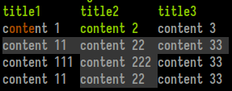
Consists of a title line with an emphasis style and a grid of width-justified cells. Each cell can be styled individually (see Text below) and also marked as "selected". Marking adjacent cells as selected can create a "selected row" effect.
Example from the Rust SDK (renders the screeshot above):
#![allow(unused)] fn main() { let table = Table::new() .add_row(vec!["title1", "title2", "title3"]) .add_styled_row(vec![Text::new("content 1").color_range(0, 1..5), Text::new("content 2").color_range(2, ..), Text::new("content 3")]) .add_styled_row(vec![Text::new("content 11").selected(), Text::new("content 22").selected(), Text::new("content 33").selected()]) .add_styled_row(vec![Text::new("content 111"), Text::new("content 222").selected(), Text::new("content 33")]) .add_styled_row(vec![Text::new("content 11"), Text::new("content 22").selected(), Text::new("content 33")]); print_table(table); // will print this table wherever the cursor may be at the moment print_table_with_coordinates(table, 4, 5, None, None); // will print this table at x: 4, y: 5, the last two `Option`s are width/height }
Ribbon

Ribbons are the UI elements used for tabs in the Zellij tab bar and for modes in the Zellij status-bar. They can be selected, which would change their background color, and can contain styled text themselves (see Text below).
Example from the Rust SDK (renders the screenshot above):
#![allow(unused)] fn main() { print_ribbon_with_coordinates(Text::new("ribbon 1").color_range(0, 1..5), 0, 0, Some(12), None); print_ribbon_with_coordinates(Text::new("ribbon 2").color_range(1, 1..5).selected(), 12, 0, Some(12), None); print_ribbon_with_coordinates(Text::new("ribbon 3").color_range(2, 1..5), 24, 0, Some(12), None); print_ribbon_with_coordinates(Text::new("ribbon 4").color_range(3, 1..5), 36, 0, Some(12), None); }
Nested List

A nested list is the UI element used in the Zellij session-manager. It is a list with possibility indented lines to an arbitrary level. Each line can be selected (multiple lines can be selected as well), and each line can be styled individually (see Text below).
Example from the Rust SDK (renders the screenshot above):
#![allow(unused)] fn main() { print_nested_list_with_coordinates(vec![ NestedListItem::new("item 1 with some nice text...").color_range(1, ..).color_range(3, 10..25).color_indices(1, vec![8]), NestedListItem::new("item 2 with some more text").indent(1).color_range(0, 1..15).color_indices(1, vec![8]), NestedListItem::new("item 3 is a real eye opener").color_range(2, ..).color_range(3, 5..20).color_indices(1, vec![8]).selected(), NestedListItem::new("item 4 is just another item, really").indent(1).color_range(0, ..).color_range(1, 1..15).color_indices(1, vec![8]), ], 1, 1, None, None); }
Text

While this element can be rendered on its own, it's mainly used inside other elements for styling.
A Text element can be selected - which will be interpreted in the context of the element it resides in, generally changing its background in one way or another.
A Text element can also have indices. These indices can be one of 4 colors (preset depending on the user's theme) assigned to characters or ranges inside the element. This can be especially useful when incorporated with fuzzy finding.
Example from the Rust SDK (renders the screenshot above):
#![allow(unused)] fn main() { let text = Text::new("foo bar baz").selected().color_range(0, 0..=2).color_range(1, 3..=5).color_range(2, 7..=9); print_text_with_coordinates(text, 0, 0, None, None); }
The Protocol
Note: This section discusses the private DCS ANSI serialization protocol used to represent the above components. It could be of interest to SDK authors, but plugin developers are encouraged to use the SDK abstractions instead.
An example component can look like this: (<ESC>, represents the escape character)
<ESC>Pzribbon;27,91,49,109,60,27,91,51,56,59,53,59,57,109,110,27,91,51,57,59,51,56,59,53,59,48,109,62,32,82,69,83,73,90,69<ESC>\
The first part of the sequence, <ESC>Pz is the DCS representing the beginning of a Zellij UI element, followed by the clear-text element name. Following is a semi-colon (;) separated list of items to be interpreted according to context. In the above case there's only one item representing a utf-8 encoded byte-string which is the ribbon's contents (the bytes separated by commas). Finally, the string terminator <ESC>\ representing the end of the UI element.
Coordinates
Each component can have an optional coordinates string, placed as the first element in the semi-colon separated list directly after the component name. Example:
<ESC>Pzribbon;2/2/10/5;114,105,98,98,111,110,32,49<ESC>\
Here, the coordinate string 2/3/10/5 instructs us to render the ribbon at x: 2, y: 3, width: 10, height: 5. The width and height are optional, so may be empty (eg. 2/3//).
Selected
If a utf-8 separated byte list begins with a clear-text x, it will be considered "selected". Eg.
<ESC>Pzribbon;x114,105,98,98,111,110,32,49<ESC>\
Opaque
If a utf-8 separated byte list begins with a clear-text z (note: must follow Selected is both are present), it will be considered "opaque". Eg.
<ESC>Ptext;z114,105,98,98,111,110,32,49<ESC>\
This indicates that the UI component should use an opaque background, defaulting to the user's black theme color. Otherwise it will be considered transparent and use no background (when possible).
Opaque components are best used as part of status bars, transparent components when one wishes to represent bare text (for example, in help text).
Indices
A utf-8 separated byte list can be preceded by a dollar ($) separated index list representing colored indices. Each element within the dollar separated list can contain zero or more indexes (separated by commas) which will be colored in the desired index color (the colors themselves being determined by the user's theme).
Example:
<ESC>Pzribbon;2/2/10/;1,2,3,4$5,6$$7$114,105,98,98,111,110,32,49<ESC>\
Here, indices 1, 2, 3 and 4 will be colored in index color 0 while 5 and 6 will be colored in index color 1. Index color 2 is empty, so no elements will be colored using it, and element number 7 will be colored in index color 3.
Indentation
In the context of a Nested List, elements can be arbitrarily indented. This is done one or more pipe (|) characters preceding the utf-8 byte list.
Example:
<ESC>Pznested_list;105,116,101,109,32,51;|105,116,101,109,32,52;||105,116,101,109,32,53,32,108,115<ESC>\
Each item in a Nested List is represented as a utf-8 byte array separated by semicolons. Here, the first item will not be indented, the second item will be indented once, and the third item will be indented twice.
Upgrading a Plugin
Zellij plugins are backwards compatible - meaning that a plugin compiled for an older version of Zellij should always run fine on a newer version of Zellij.
The plugin API however might break every now and then for plugin code that has not been compiled for the current version. We try to minimize these occurrences as much as possible.
Plugin Aliases
Plugin aliases are a dictionary between an arbitrary string (eg. filepicker) and a non-alias plugin url, with optional plugin configuration. They can be configured in the Zellij configuration file under the plugins block.
Here's the default aliases:
plugins {
tab-bar location="zellij:tab-bar"
status-bar location="zellij:status-bar"
strider location="zellij:strider"
compact-bar location="zellij:compact-bar"
session-manager location="zellij:session-manager"
welcome-screen location="zellij:session-manager" {
welcome_screen true
}
filepicker location="zellij:strider" {
cwd "/"
}
}
With this plugins block, whenever the bare tab-bar is used to refer to a plugin (be it in a layout, from the command line, from a keybinding or from another plugin), Zellij will translate it to the internal zellij:tab-bar url. Whenever the bare filepicker url is used to refer to a plugin, Zellij will translate it to the built-in zellij:strider url will be used with the cwd "/" configuration.
Aliases can be added to this block or changed to swap the default built-in plugins to other implementations. Removing the default aliases entirely might cause Zellij not to function as expected.
When swapping the default aliases for custom plugins, it's important that these plugins implement the basic contract Zellij (and indeed, other plugins) expect of them. The following sections describe the contract for each default alias.
Here's an example on how to use the plugin alias in a layout:
layout {
default_tab_template {
children
pane size=1 borderless=true {
plugin location="compact-bar"
}
}
}
A note about cwd
When an alias defined a cwd for its plugin (such as the filepicker example above), Zellij will add the caller_cwd configuration parameter with the cwd of the focused pane in addition to the configured cwd above, instead of overriding the configured cwd of the plugin. This is so that plugins may provide a nicer user experience to their users and still have the desired cwd configuration of the alias.
The tab-bar Alias
This alias, by default translated to the internal zellij:tab-bar plugin url, represents the tab bar loaded on the top line of the default layout.
Contract
Zellij loads this tab bar with a height of 1 and a width the size of the user's full screen. Zellij has no other expectations from this plugin, even though users will probably expect at least the tabs to be shown.
The status-bar alias
This alias, by default translated to the internal zellij:status-bar plugin url, represents the status-bar loaded in the default layout on the bottom of the screen.
Contract
Zellij loads this status bar with a height of 2 and a width the size of the user's full screen. Zellij has no other expectations from this plugin, even though users will probably expect at least the input modes and their status be shown.
The strider alias
This alias, by default translated to the internal zellij:strider plugin url, is the default Zellij filesystem explorer.
Contract
Zellij loads this plugin in the strider layout with a width of 20% of the user's screen and a the full height of the user's screen minus 3 (one for the tab-bar and two for the status-bar). Zellij has no other expectations from this alias, but users will probably expect it to at least show a list of files in the current directory.
The compact-bar alias
This alias, by default translated to the internal zellij:compact-bar plugin url, represents the compact-bar loaded in the compact layout on the bottom of the screen.
Contract
Zellij loads this compact bar with a height of 1 and a width the size of the user's full screen. Zellij has no other expectations from this plugin, even though users will probably expect at least the input mode and the tabs be shown.
The session-manager alias
This alias, by default translated to the internal zellij:session-manager plugin url, represents the session-manager loaded by default with Ctrl o + w.
Contract
Zellij loads the session-manager as a floating pane as part of the default keybindings.
User expectations
Users will likely expect the session-manager to:
- Allow them to switch between active sessions
- Allow them to resurrect exited sessions
- Allow them to start a new session
- Allow them to rename the current session
- Allow them to disconnect other users (clients) in the current session
- Allow them to kill active sessions and permanently delete exited sessions
The welcome-screen alias
This alias, by default translated to the internal zellij:session-manager plugin url with the welcome_screen true configuration, is loaded on startup when the built-in welcome layout is loaded with zellij -l welcome.
Contract
Zellij loads the welcome-screen fullscreened without any other UI. It expects the plugin to close itself (and thus the session) once the user starts a new session, switches to a new session or resurrects an exited session.
User expectations
Users will likely expect the welcome-screen to:
- Allow them to attach to an existing session
- Allow them to resurrect an exited session
- Allow them to start a new session
The filepicker alias
This alias, by default translated to the internal zellij:strider plugin url with the cwd "/" configuration, is used by various plugins to allow users to traverse their filesystem and select files or folders for various purposes.
For example, the session-manager and welcome-screen use the filepicker to allow users to choose the working directory for the new session they would like to start.
Contract
Zellij loads the filepicker using a pipe. It sends it a private message with the filepicker message name.
If the message originates from another plugin
Zellij expects the filepicker to:
- Open a new pipe with the originating plugin's ID (it receives this ID as part of the
PipeMessage) as its destination. - The message name should be
filepicker_result - The message
argsshould be the same args sent in the original message (if any). - The message payload should be the path the user chose as clear text.
If the message originates from the CLI
Zellij expects the filepicker to:
- Block the CLI pipe input to give the user time to choose a file using
block_cli_pipe_input. - Output the the path the user chose as clear text with the
cli_pipe_outputcommand. - Unblock the CLI pipe input once the user chose a path with
unblock_cli_pipe_input.
User expectations
The user will likely expect the plugin to either close itself or hide itself once the file has been chosen, so their focus will return the pane which originated this request (be it another plugin or a terminal if this request was made through a CLI pipe).
Example
See the strider plugin's implementation.
Example Plugins
harpoon

harpoon enables quick navigation to your favorite panes.
You can use a to add the current pane to your harpoon list. You can navigate harpoon using Up,
Down, or using vim navigation. To go to the pane you just press Enter.
jbz

jbz simply spawn all your just commands wrapped in bacon, each one in a new pane.
Monocle

Monocle is a fuzzy finder for file names and their contents.
It can
- Open results in your
$EDITOR(scrolled to the correct line), as floating or tiled panes. - Open a new terminal pane to the location of the file, as a floating or tiled pane.
- Ignore hidden files and respect your
.gitignore.
If you press ESC or Ctrl c, it will hide itself until you call it again.
Multitask

This Zellij plugin is a "mini-ci". It allows you to specify commands that will run in parallel, keeping track of completed commands and their exit status. Only progressing to the next step if all the commands in the previous step succeeded.
Did one command fail? No problem! Fix the issue, re-run it with ENTER and the pipeline will continue.
room

room is for quickly searching and switching between tabs.
You can use Tab, Up, or Down to cycle through your tab list and then press Enter to switch
to the selected tab. You can start typing to filter the tab list and you use Esc or Ctrl + c to exit.
zellij-forgot

zellij-forgot is a plugin to quickly help you access and search through a customizable list of items. Can't remember your keybindings? Zellij-forgot can help you. Struggling to recall the names of all your cats? Zellij-forgot's got you covered!
zjstatus

zjstatus is a highly customizable status bar for Zellij. It has various widgets that can be styled to your liking, including such niceties as a system clock and even the ability to remove pane frames if there's only one pane on screen.
Developing a Plugin in Other Languages
Here's a list of other SDKs for developing Zellij plugins in languages other than Rust:
- Go
- Your SDK?
Plugin Upgrade Guide for version 0.38.0
Version 0.38.0 includes some breaking changes for plugins. This guide aims to provide a check list for plugin authors to quickly update their plugins:
configuration
Plugins are now configurable. This means that the load lifecycle-method now includes an additional configuration parameter which is an arbitrary list of key/value strings. For more info, please see configuration.
If you don't want to use the configuration, you can include a second configuration parameter in the load function and not use it. For a rust example, see: https://github.com/zellij-org/rust-plugin-example/blob/main/src/main.rs#L17
permission-system
Starting from this version, Zellij includes a permission system to give more power to users over the plugins they load. Many Events and Commands now require certain permissions. If your plugin relies on these commands, you'll need to include a request_permission command in your load method to prompt the user to give your plugin these permissions. For a rust example, please see: https://github.com/zellij-org/rust-plugin-example/blob/main/src/main.rs#L22
protocol buffers
Starting this version, plugins use protocol buffers to communicate across the wasm boundary. If you're using the official sdk (zellij-tile) this should be transparent to you, and you can remedy any issues by compiling against the latest zellij-tile version (0.38.0 as well).
The upshot of this is that this change should make plugins forwards compatible (barring API behavior change of course).
Session Resurrection
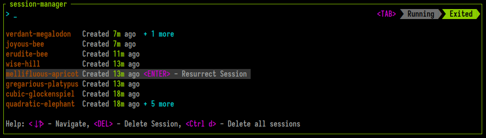 Zellij includes built-in session resurrection capabilities. This means that by default, each Zellij session is serialized and kept in the user's cache folder waiting to be recreated after an intentional quit or an unintentional crash.
These exited resurrectable sessions can be listed through the CLI or the built-in session-manager. They can be resurrected through the CLI by attaching to them or through the session-manager by selecting them in the EXITED section.
What is Resurrected and how to Configure
By default, Zellij serializes the session layout (panes and tabs) and the command running in each pane (it will re-run them in command panes). Through configuration it's possible to have Zellij also serialize and resurrect the pane viewport and scrollback.
Zellij does not immediately run resurrected commands, but rather places them behind a "Press ENTER to run..." banner so as to prevent uncomfortable accidents with things like rm -rf.
session_serialization
To disable session serialization (and thus also resurrection), set session_serialization false in the config.
pane_viewport_serialization
When session_serialization is enabled, setting pane_viewport_serialization to true in the config will also serialize the pane viewport (the part of the terminal visible on screen).
scrollback_lines_to_serialize
When pane_viewport_serialization is enabled, setting scrollback_lines_to_serialize to 0 in the config will serialize all scrollback and to any other number will serialize line number up to that scrollback. Note that this might incur higher resource utilization (and certainly a higher cache folder usage...)
Resurrecting Sessions through the CLI
To list exited sessions, use zellij list-sessions (or zellij ls) for short:
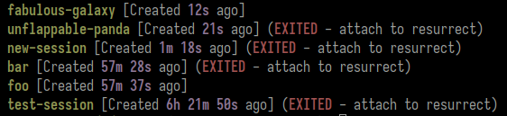
Then, in order to resurrect a session, one can attach to it. If you'd like to immediately run all resurrected commands and skip the "Press ENTER to run..." banner, you can issue the --force-run-commands flag.
Resurrecting Sessions through the session-manager
Sessions can also be resurrected and switched to from within a Zellij session using the session-manager. To do this, press <TAB> to toggle the EXITED sessions and select one with <ENTER>.
Permanently Deleting Sessions
Resurrectable sessions can be permanently deleted with the zellij delete-session or zellij delete-all-sessions CLI commands. They can also be deleted from the session-manager.
Session files in the cache
Zellij serializes the session data into a layout every 1 second and saves it to the system's cache folder. These layouts can later be examined, altered and even shared as is across machines. They can be loaded with zellij --layout session-layout.kdl just like any other layout. They are intentionally Human readable to facilitate their re-use.
Compatibility
Issues
Please report issues here.
Known Issues
The status bar fonts don't render correctly:
This most likely is caused by a missing character in the font.
Fonts from nerdfonts can fix this problem.
Some Options:
| Package Manager | Name |
|---|---|
| apt | fonts-powerline |
| nix | nerdfonts |
Post installation the appropriate environment needs to be aware of the font.
Alt button mapping on Mac hardware (Darwin systems):
This can be mitigated individually on a terminal emulator level, see the FAQ for more information.
Pane frame title has issues with kitty:
This sadly seems to be an issue that can not be mitigated easily, more information can be found here.
Mouse issues:
If mouse_mode is turned on zellij handles these events, zellij provides an
escape mechanism in the form of the SHIFT Key, once it is pressed zellij lets
the terminal handle selection, clicking on links, copying, scrolling.
More information can be found here
Clipboard not working:
This is a known problem which mostly occurs in specific terminal emulators under Linux/OS X such as GNOMEs default Terminal, terminator, and more.
A workaround for this was added in zellij > 0.24.0 and enables the user to
specify a custom command that copies selected text to the system clipboard.
Refer to lines containing "copy_command" from the output of zellij setup --dump-config.
For technical background, refer to this issue and this merge request
Backspace sending ctrl-h (entering into Move mode)
This can happen in some terminal emulators (eg. Xterm). It can be remedied either on the terminal emulator side by getting the terminal emulator to send ^? instead of ^H, or on the Zellij side by remapping ctrl-h to some other key. Here's an example fix in xterm: http://www.hypexr.org/linux_ruboff.php
Weird colors in certain applications running inside Zellij
This might happen due to Zellij support of the extended "styled_underlines" feature. You can try disabling them by adding styled_underlines false to your config.